Classic computer vision
Calibration, features, two-view geometry, RANSAC, PnP, flow, VO/SLAM, stereo and tracking
1The Big Picture
Before any algorithm: what a camera system in a car actually has to deliver, and why classic computer vision is still the backbone of it even in the era of neural networks.
A production camera system is not "a camera plus an AI". It is a measurement chain. Photons hit a sensor, an ISP turns raw Bayer data into usable images, geometry converts pixels into rays and metric positions, algorithms extract measurements (corners, flow, disparity), mid-level estimators turn them into poses and 3D structure, trackers turn noisy per-frame results into stable objects with velocities, and finally a function (surround view, automated parking, emergency braking, lane keeping) acts on them. Every arrow in that chain can add error, latency or a failure mode, and most of the arrows are classic computer vision.
Neural networks have taken over recognition (what is this object, where is the free space, where is the lane). But the moment a network output needs to become a number in metres, an angle in degrees, or a position in the vehicle frame, it passes through the same geometry this handbook explains: camera models, calibration, projective geometry, robust estimation and filtering. A detection box that is perfect in pixels is useless if the camera pitch is off by half a degree.
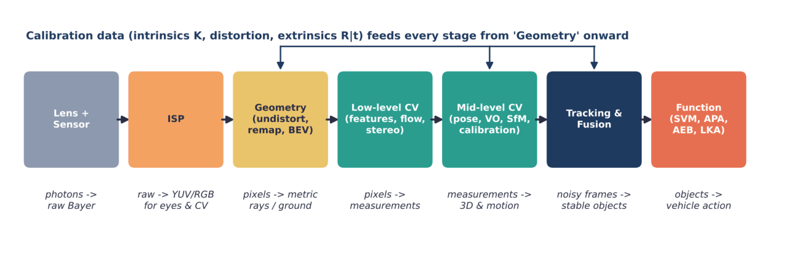
1.1Why classic CV is still essential
There are five reasons you will keep hearing classic CV in reviews, customer meetings and safety discussions:
- Geometry is physics, not statistics. How a lens projects a point is known exactly. There is nothing to learn and a model with five numbers beats any network for accuracy, generalisation and explainability.
- Calibration and ego-motion are prerequisites. Surround view stitching, bird's-eye-view (BEV) perception, distance estimation and multi-camera fusion all assume known intrinsics and extrinsics, and ideally a known vehicle motion. These are produced by classic algorithms (PnP, homographies, VO, bundle adjustment).
- Determinism and certification. ISO 26262 and ISO 21448 (SOTIF) argumentation is much easier for an algorithm whose failure modes can be derived analytically ("PnP is ill-conditioned when targets are far and small") than for a black box.
- Compute and power budgets. A FAST corner detector or a hardware remap engine costs a fraction of a network inference. Many SoCs include fixed-function blocks for exactly these classic operations: lens distortion correction, pyramids, dense optical flow and stereo disparity.
- Plausibility and monitoring. Classic methods are used to cross-check networks: does the detected object move consistently with the optical flow? Is the lane consistent with the vanishing point? Is the camera blocked or out of calibration?
How to phrase it for a customer
"Our neural networks tell us what is in the scene; our geometric pipeline tells us where it is, in metres, in the vehicle coordinate system, with a known uncertainty. The second part is what makes the first part usable for vehicle control."
1.2A vocabulary map
The following table maps the topics of this handbook to the questions they answer. It is a good mental index: when someone mentions a term in a meeting, you can place it immediately.
| Topic | Question it answers | Typical automotive use |
|---|---|---|
| Camera model (intrinsics, distortion) | Which ray in space does pixel (u,v) see? | Undistortion, BEV, any metric measurement |
| Extrinsic calibration | Where is the camera mounted and how is it rotated relative to the car? | EOL calibration, SVM stitching, sensor fusion |
| Features (Harris, FAST, SIFT, ORB) | Which image points can I find again in another image? | VO, SfM, online calibration, relocalisation |
| Homography / epipolar geometry | How are two views of the same scene related? | BEV, ground-plane motion, motion stereo |
| PnP | Where is the camera, given known 3D points and their pixels? | Pattern-based extrinsics, map relocalisation, trailer angle |
| Optical flow | How did each pixel move between frames? | Ego-motion, moving-object detection, TTC |
| VO / SLAM | How did the car move, and what does the environment look like? | Parking, memory parking, ego-motion without GNSS |
| SfM / bundle adjustment | What is the jointly optimal 3D structure and camera trajectory? | Mapping, motion stereo, calibration refinement |
| Stereo | How far is each pixel from a calibrated camera pair? | Front stereo cameras, depth for AEB |
| Tracking (Kalman, association) | Which detection belongs to which object over time, and how is it moving? | Object lists for ACC/AEB, lane tracking, slot tracking |
| RANSAC / robust estimation | How do I fit a model when 30-70% of the data is wrong? | Everywhere correspondences are used |
2Image Formation: the Camera as a Measuring Device
A calibrated camera is an angle-measuring instrument. This chapter explains the model that connects a 3D point to a pixel, which is the foundation of everything that follows.
2.1The pinhole model
Imagine a dark box with a tiny hole. Light from a 3D point travels in a straight line through the hole and hits the back wall. Every point on the wall is hit by exactly one ray, so the image is a central projection: all rays pass through one point, the camera centre C. Real cameras use lenses (to collect more light), but geometrically a well-corrected lens behaves like a pinhole plus a distortion term, which we add later.
Placing a virtual image plane at distance f in front of the centre (to avoid the upside-down image), similar triangles give the core relation: the image coordinate is the 3D coordinate divided by depth and scaled by the focal length.
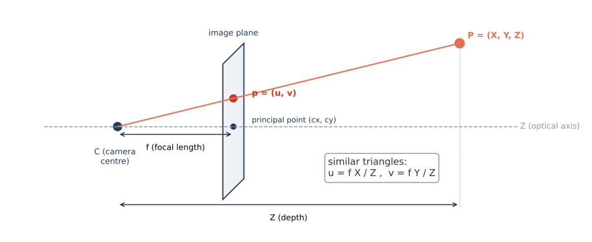
The division by Z is the single most important fact about cameras. It is why far objects look small, why parallel lines meet at vanishing points, and why a single image does not contain depth. It is also why the problem is non-linear, and why homogeneous coordinates are used.
Homogeneous coordinates: making projection linear
Write a pixel as a 3-vector (u, v, 1) and accept that any non-zero multiple (wu, wv, w) represents the same pixel. With this trick, projection becomes a plain matrix multiplication followed by one division at the very end. Translations also become matrix products. This is why every textbook writes:
The 3x4 matrix P is the projection matrix. It has 11 degrees of freedom: 5 intrinsic (two focal lengths, principal point, skew) and 6 extrinsic (3 rotation, 3 translation). A bonus of homogeneous coordinates: points at infinity (w = 0) are ordinary vectors, so vanishing points and the horizon can be handled with the same algebra as any other point.
2.2Intrinsics: what K really means
Focal length in pixels. fx is the physical focal length divided by the pixel pitch. A 4 mm lens on a sensor with 3 µm pixels gives fx ≈ 1333 px. This number directly tells you the angular resolution: one pixel near the image centre covers about 1/f radians (here 0.043°). That is the precision limit of every angle you measure with this camera.
Principal point (cx, cy) is where the optical axis pierces the sensor. It is never exactly the image centre: lens-to-sensor alignment tolerances shift it by tens of pixels, which is why it is calibrated per unit. Skew s is zero for all modern sensors and is normally fixed to 0. Aspect ratio fy/fx is 1 for square pixels, but is kept free in many calibrations because it absorbs small manufacturing effects.
Angular resolution
- Front ADAS camera, 8 MP (3840 px wide): 120° wide lens f ≈ 1100 px (1 px ≈ 0.05°); 30° tele lens f ≈ 7000 px (1 px ≈ 0.008°).
- Surround-view fisheye, 1-3 MP, ~190°: f around 300-600 px (equidistant), 1 px ≈ 0.1-0.2°.
- Consequence: a 1-pixel error at 20 m means ~3 mm laterally for the tele camera, ~2 cm for the wide camera, but 4-7 cm for a fisheye. Fisheye cameras are excellent for coverage and poor for distant precision.
2.3Extrinsics and coordinate frames
The extrinsic parameters (R, t) express where the camera is and how it is oriented with respect to some reference frame. In a car that reference is usually the vehicle frame defined by ISO 8855: origin on the ground below the middle of the rear axle (some OEMs use the front axle or the bumper), x forward, y to the left, z up. The camera frame in computer vision has z along the optical axis, x to the right in the image and y down. Getting these conventions wrong is one of the most common integration bugs.
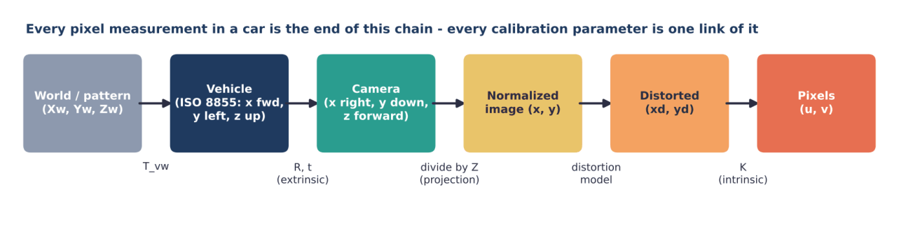
Representing rotation
A rotation has 3 degrees of freedom but there are several ways to write it, each with a purpose:
| Representation | Parameters | Good for | Watch out |
|---|---|---|---|
| Euler angles (yaw, pitch, roll) | 3 | Humans, specifications, tolerances ("pitch 12° ±2°") | Order matters (ZYX vs XYZ); gimbal lock near ±90° pitch; mounting angles of SVM mirror cameras are large |
| Rotation matrix R | 9 (6 constraints) | Computation: rotate a point by matrix multiply | Must stay orthonormal; drifts with numeric noise |
| Axis-angle / Rodrigues vector | 3 | Optimisation (minimal, no singularity for small updates); OpenCV rvec | Ambiguous at 180° |
| Unit quaternion | 4 (1 constraint) | Interpolation, filtering (IMU, EKF), storing poses | q and -q are the same rotation |
Conventions
When two teams exchange extrinsics, always exchange: the frame definitions, the rotation order, whether the transform maps camera-to-vehicle or vehicle-to-camera, and the units. A sign flip in pitch looks plausible for small angles and can survive weeks of testing.
2.4Lens distortion
Real lenses bend straight lines. The dominant effect is radial distortion: points are moved towards or away from the image centre by an amount that grows with distance from the centre. Wide-angle lenses show barrel distortion (straight lines bulge outwards), tele lenses sometimes pincushion. A smaller effect, tangential distortion, comes from the lens not being perfectly parallel to the sensor (decentering). The classic Brown-Conrady model, used by OpenCV, applies distortion to the normalised coordinates x = X/Z, y = Y/Z before multiplying by K:
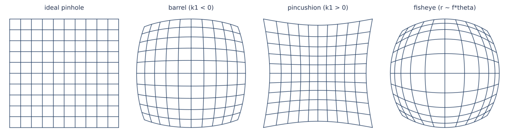
Important intuition: distortion is a property of the lens, not of the scene. Once it is calibrated, every pixel can be converted back to an ideal pinhole ray. That conversion is called undistortion and it is what allows all the linear geometry of later chapters to work on real lenses.
2.5Fisheye camera models
Surround-view cameras have a field of view of 180-200°. A pinhole projection maps angle θ from the axis to radius r = f·tan θ, which goes to infinity at 90°. No polynomial correction can fix that, so fisheye lenses need models that are built around the angle θ rather than the pinhole radius.
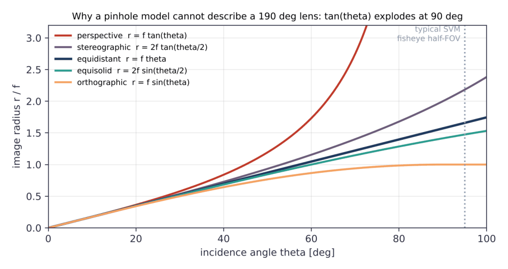
| Model | Idea | Where you meet it |
|---|---|---|
| Kannala-Brandt (OpenCV fisheye) | r(θ) = f (θ + k1θ3 + k2θ5 + k3θ7 + k4θ9): polynomial in the incidence angle | Most automotive SVM pipelines; cv::fisheye; good up to and beyond 180° |
| Scaramuzza (OCamCalib) | Back-projection as a polynomial in the image radius: ray = (u, v, a0 + a2ρ2 + ...) | Popular in research and some suppliers; direct pixel-to-ray, inverse needs fitting |
| Unified / Enhanced Unified (UCM/EUCM) | Project onto a unit sphere, then pinhole from a point shifted by ξ | SLAM (closed-form projection and unprojection, cheap Jacobians) |
| Double Sphere | Two spheres shifted along the axis; closed-form both ways | VIO/SLAM with very wide lenses |
| Equidistant + polynomial (supplier specific) | Lens maker's design curve r(θ) as a look-up table + small correction | Lens data sheets; good initial guess for calibration |
Why a lens designer's curve is a great starting point
Fisheye calibration is non-linear and sensitive to initialisation. The lens supplier's nominal r(θ) table, sampled from the optical design, already explains most of the distortion. Calibration then only has to estimate small deviations plus the principal point - which is far more robust, especially with few target images in a production station.
2.6Undistortion, remapping and virtual cameras
Undistortion is implemented as inverse mapping: for every pixel of the output image you compute where it comes from in the input image and interpolate there (bilinear is standard). Doing it in the forward direction would leave holes. Because the camera model is fixed, the mapping is precomputed once into a look-up table (LUT) and reused every frame. The same mechanism produces virtual cameras: a rectified perspective view for a detector, a cylindrical view for cross-traffic, or the bird's-eye view for parking.
Remap engines and LUT size
A full-resolution LUT with two 32-bit floats per pixel for a 3 MP camera is 24 MB, read every frame - a lot of DDR bandwidth. Embedded implementations store a sparse LUT (e.g. one entry every 8 or 16 pixels, fixed-point) and interpolate between entries, and use the SoC's hardware lens distortion correction (LDC) or warp engine, which works on tiles in on-chip memory. When reviewing a design, check the LUT grid spacing against the curvature of the mapping near the fisheye border, where interpolation errors are largest.
2.7Time is a dimension too: rolling shutter and synchronisation
Most automotive CMOS sensors use a rolling shutter: rows are exposed one after another, so the top and bottom of the image are captured several milliseconds apart (a typical readout is 10-30 ms). At 30 m/s, the car moves 30-90 cm during readout. For slow parking manoeuvres this is negligible, but for highway VO, calibration while driving, or fusion with radar and LiDAR, each row should be associated with its own timestamp. Equally important is frame synchronisation between cameras (SVM stitching of moving objects, stereo) and accurate timestamps relative to vehicle odometry. Many "calibration problems" in the field are in fact time-offset problems.
Sensitivity to time error
- Yaw rate 30°/s while turning, time offset 10 ms: 0.3° apparent rotation error - larger than a typical extrinsic tolerance.
- Speed 20 m/s, offset 10 ms: 20 cm position error in fusion.
3The ISP Through the Eyes of Computer Vision
The Image Signal Processor is tuned to make images look good to humans. Computer vision needs images that are measurable. Understanding where these goals conflict is what separates a good ISP/CV team from one that blames each other.
3.1What the ISP does, block by block
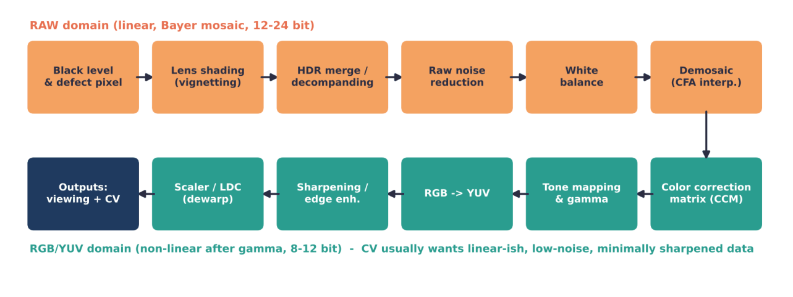
| Block | What it does | Effect on computer vision |
|---|---|---|
| Black level, defect pixel correction | Subtract the sensor's dark offset; replace stuck/hot pixels | Wrong black level shifts all intensities and breaks photometric assumptions; residual hot pixels become fake corners |
| Lens shading correction | Compensate vignetting (corners darker than the centre), very strong for fisheye | Uncorrected shading changes the appearance of the same object across the image; harms matching and photometric SVM blending |
| HDR merge /decompanding | Combine multiple exposures or split-pixel readouts; sensors output companded (piecewise-linear compressed) 12-bit data that is expanded to 20-24 bit | Motion artefacts between exposures (ghost edges), SNR drop at the transition points between exposures, LED flicker |
| Raw noise reduction (spatial/temporal) | Remove noise before demosaicing | Temporal NR blends frames: moving objects get trails that corrupt optical flow and tracking |
| White balance | Scale R, G, B so grey looks grey | Colour-based detection (traffic lights, lane colours) depends on it |
| Demosaic | Interpolate the two missing colours per pixel from the Bayer (or RCCB/RCCG) mosaic | Zipper and false-colour artefacts at edges; edge position bias at the sub-pixel level |
| Colour correction matrix | Map sensor colours to a standard colour space | Amplifies noise for sensors with weak colour separation (RCCB) |
| Tone mapping and gamma | Compress 120+ dB HDR into 8-12 bits; local tone mapping adapts per region | Non-linear, scene-dependent intensity: halos at edges, brightness changes between frames, inconsistent appearance between SVM cameras |
| Sharpening | Boost high frequencies for perceived crispness | Overshoot/undershoot creates halos; shifts edge and corner locations; amplifies noise |
| Scaler, LDC / dewarp | Resize and correct distortion in hardware | Must use exactly the calibrated model; interpolation smooths texture |
3.2Human vision path vs machine vision path
Because the goals conflict, modern automotive ISPs and SoCs support multiple output streams from the same raw frame: a display stream (strong tone mapping, sharpening, colour enhancement) for the driver, and one or more machine-vision streams with linear or mildly tone-mapped data, little or no sharpening, and controlled noise reduction. Some perception stacks even consume RAW or near-RAW data directly.
Three properties CV cares about
- Repeatability: the same object should produce the same pixel values in consecutive frames and in different cameras. Aggressive local tone mapping and auto-exposure jumps violate this.
- Geometric fidelity: edges and corners must stay where they are. Sharpening, demosaic and denoise can move them by fractions of a pixel - which matters for calibration and stereo.
- Known noise: algorithms weight measurements by their noise. A predictable, signal-dependent noise model (shot + read noise) is more useful than "less noise" with unknown structure.
3.33A loops and their effect on algorithms
Auto-exposure (AE), auto-white-balance (AWB) and, for some cameras, auto-focus form the 3A control loops. Almost every classic motion algorithm assumes brightness constancy: a point looks the same in consecutive frames. Every AE step violates that globally. Robust pipelines therefore either use illumination-invariant features (gradients, census transform, normalised cross-correlation, binary descriptors), estimate an affine brightness change per frame or per patch, or ask the ISP for the exposure and gain values so the change can be compensated exactly. For surround view, the four cameras run independent AE; the stitching stage applies photometric harmonisation (gain/offset per camera estimated in overlap zones) so the seams do not show brightness steps.
Image quality KPIs you will hear
- MTF / SFR (slanted-edge method, ISO 12233): sharpness as contrast vs spatial frequency; checked across the field, including fisheye borders.
- SNR and dynamic range (dB): ability to see into shadows and highlights simultaneously - tunnel exits, low sun.
- LED flicker mitigation (LFM): PWM-driven LED signs and lights can disappear or flicker in short exposures.
- IEEE P2020: the automotive image-quality standardisation effort, including KPIs such as contrast detection probability (CDP) that relate image quality to detection performance rather than to human preference.
ISP vs CV discussion
"Image quality for perception is not image quality for humans. We specify the ISP machine-vision output by what the algorithms need: linear-ish response, stable exposure, no halos, sub-pixel geometric fidelity, and a documented noise model."
4Intrinsic Calibration with Patterns
Intrinsic calibration measures the lens and sensor: focal length, principal point and distortion. It is done once per camera unit, usually at the camera supplier, and everything geometric downstream depends on it.
4.1Why every unit must be calibrated
Two cameras of the same part number are not geometrically identical. The lens is glued onto the sensor housing with a tolerance of a few micrometres in position and a fraction of a degree in tilt (high-end modules use active alignment, where the lens is positioned while the camera is imaging a target, then the glue is cured). The remaining spread is still large enough to move the principal point by 10-30 pixels and change the effective focal length by around one percent. For a surround-view fisheye, using nominal instead of per-unit intrinsics typically shows up as visible misalignment at the stitching seams.
Where intrinsics live
The usual flow: the camera supplier calibrates each module at end of line, writes the parameters into the camera's EEPROM/flash, and the ECU reads them at start-up (or the vehicle EOL reads and stores them). This decouples camera replacement in service from re-running an intrinsic calibration.
4.2Patterns and corner detection
A calibration pattern is a set of points whose 3D positions are known exactly, which can be found in the image with very high precision. The common choices:
| Pattern | Pros | Cons |
|---|---|---|
| Checkerboard | Saddle-point corners are invariant to blur, perspective and lens distortion; sub-pixel precision ~0.05 px | Whole board must be visible (classic detectors); orientation ambiguity for symmetric boards |
| Circle grid | Centroids are very precise with little noise | Centroid of a projected circle is NOT the projected centre under perspective and distortion: systematic bias, worst for fisheye |
| ChArUco (checkerboard + ArUco markers) | Each corner has a unique ID: partial views work, ideal for fisheye corners and multi-camera setups | Marker decoding needs enough resolution |
| AprilTag / ArUco fields, custom coded targets | Robust, unique IDs, used in EOL halls with many targets | Corner precision slightly lower than a pure checkerboard |
Checkerboard corners are refined to sub-pixel accuracy with a neat trick: at the true corner q, the image gradient at every nearby point p is perpendicular to the vector (p - q). Collecting this condition over a small window gives a tiny least-squares problem whose solution is q (this is what OpenCV's cornerSubPix does). Corner precision of 0.05-0.1 pixel is realistic on sharp images.
4.3Zhang's method, step by step
Zhengyou Zhang's 1999 method made calibration practical: print a planar pattern, show it to the camera in several orientations, done. Its structure - linear initialisation followed by non-linear refinement - is the template for almost every calibration and geometry algorithm in this handbook.
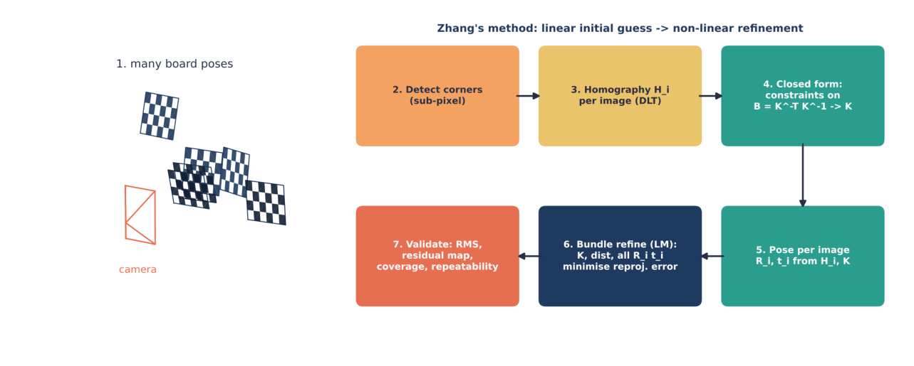
Step 1-2: a homography per image
Put the pattern plane at Z = 0 in its own coordinate frame. Then the third column of R is multiplied by zero and disappears, and the projection of the plane becomes a 3x3 homography H, which can be estimated linearly from 4 or more corner correspondences (the DLT algorithm, Chapter 8):
Step 3: constraints on K
Since r1 and r2 are columns of a rotation matrix, they are orthogonal and have the same length. Writing h1, h2 for the first two columns of H, this gives two equations per image that involve only the intrinsics, through the symmetric matrix B:
B has 5 unknowns up to scale, so three images in general position are enough (two if skew is fixed to zero). Stack the equations, solve with SVD, and extract K from B by a Cholesky-like decomposition. Step 4: with K known, each image's pose follows directly: r1 = K-1h1/λ, r2 = K-1h2/λ, r3 = r1 × r2, t = K-1h3/λ (then R is re-orthogonalised).
Step 5-6: bundle refinement
The closed form ignores distortion and is sensitive to noise, so it is only the starting point. The final answer comes from minimising the reprojection error - the pixel distance between each detected corner and where the full model (K, distortion, pose of that image) predicts it - over all images at once:
This is a non-linear least-squares problem solved with Levenberg-Marquardt (Chapter 9). For 20 images the unknowns are ~9 intrinsic/distortion parameters plus 6 per image, i.e. about 130 numbers - small and fast. Distortion starts at zero (or at the lens design curve for fisheye) and is estimated only in this stage.
Why minimise reprojection error?
Because it is the quantity we actually measure. Detected corners carry pixel noise; if that noise is Gaussian, minimising squared pixel residuals is the maximum-likelihood estimate. Algebraic errors (like the linear equations above) are convenient but have no physical meaning, which is why they are used only for initialisation.
4.4Judging the result
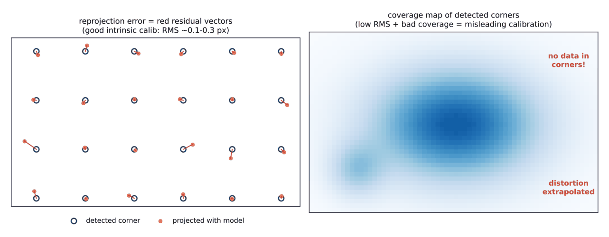
A low RMS reprojection error is necessary but not sufficient. RMS tells you how well the model fits the data you gave it, not how well it predicts the rest of the image. Typical traps:
- Poor coverage. If no corners were seen near the image border, the distortion polynomial is extrapolated there - and polynomials extrapolate badly. Fisheye borders are exactly where the surround-view seams are.
- Correlated parameters. Focal length and distance to the board are nearly interchangeable for a fronto-parallel board; principal point and board tilt are coupled. Tilted views (30-50°) break these correlations. The covariance matrix from the optimiser (standard deviation of f, cx, cy) should be reported alongside RMS.
- Over-parameterisation. More distortion coefficients always lower the RMS and can still make predictions worse (over-fitting). Validate on images not used for the fit.
- Structured residuals. Plot residual vectors over the image: random directions mean the model is adequate; a swirl or radial pattern means the distortion model is wrong or the board is not flat.
- Board quality. A printed board on cardboard can bend by millimetres. Production uses glass or aluminium-composite targets with known flatness.
Good values
- Intrinsic RMS: 0.1-0.3 px for a good perspective camera; 0.2-0.5 px for fisheye.
- Principal point uncertainty (1σ): below ~1 px. Focal length: below ~0.1%.
- Temperature: plastic lens barrels change focal length and principal point measurably between -40°C and +85°C; precision applications model or bound this drift.
4.5Production intrinsic calibration
Waving a board in front of each camera is too slow for a factory. Production stations show the camera many targets at once - e.g. a multi-plane target arrangement or a hemisphere of ChArUco boards for fisheye - so a single image (or a few with the camera on a rotation stage) covers the whole field of view at different angles. Alternatives use collimators: optical devices that present a target at infinity at precisely known angles, directly measuring the angle-to-pixel mapping without needing a large hall. Cycle time requirements are in the order of seconds per unit.
5Extrinsic Calibration of a Single Camera
Extrinsics answer: where exactly is this camera on this car, and where is it looking? Unlike intrinsics, they can only be determined once the camera is mounted in the vehicle.
5.1Why small angles matter so much
Most automotive camera functions convert a pixel to a position on the road. For a camera at height h looking at a ground point at distance d, the ray's depression angle α satisfies tan α = h/d. Differentiating shows how a pitch error δα becomes a distance error:
| Pitch error | d = 3 m, h = 1.0 m (SVM) | d = 10 m, h = 1.2 m | d = 20 m, h = 1.2 m | d = 50 m, h = 1.2 m |
|---|---|---|---|---|
| 0.1° | 1.7 cm | 15 cm | 58 cm | 3.6 m |
| 0.5° | 9 cm | 74 cm | 2.9 m | 18 m |
The error grows with the square of the distance. This single table explains why front camera pitch is calibrated to a fraction of a degree, why vehicle load and tyre pressure matter, and why monocular distance estimation far away is fundamentally hard. Yaw errors produce lateral offsets that grow linearly with distance (0.1° at 50 m is 9 cm) - important for lane keeping.
5.2Pattern-based extrinsic calibration at EOL
In the end-of-line (EOL) hall, the vehicle is placed in a known position relative to a set of targets whose 3D coordinates are surveyed. The process is:
- Position the vehicle - on a centring device, rollers or alignment stand, or measure its actual pose with wheel-alignment sensors. Many processes reference the thrust axis (the actual driving direction defined by the rear wheels) rather than the body's centre line, because that is the direction the car really moves.
- Detect targets in the image with sub-pixel precision and assign IDs.
- Solve PnP (Chapter 10): from known 3D target points (in the vehicle frame) and their pixel positions, with known intrinsics, compute the camera rotation and translation. Usually translation is fixed or strongly constrained to the CAD mounting position, and only rotation (plus perhaps height) is estimated - rotation is what the image measures well.
- Check plausibility against nominal values and tolerances (e.g. mounting pitch ±3°), check the reprojection residual, check that enough targets were detected.
- Store the result in the ECU's non-volatile memory. In practice this is triggered and read back via diagnostics: a UDS RoutineControl (0x31) starts the calibration routine, results and status are read with ReadDataByIdentifier (0x22), and failures set diagnostic trouble codes.
The error budget is mostly NOT the algorithm
With good targets the PnP solution itself is accurate to a few hundredths of a degree. The final error is usually dominated by: vehicle positioning in the hall, target survey accuracy, floor flatness, suspension state (fuel level, driver present or not, tyre pressure), and intrinsic calibration errors. A professional calibration concept includes a written error budget for each of these.
5.3Service calibration and why online calibration exists
After a windscreen replacement, bumper repair or camera exchange, the camera must be re-calibrated in a workshop, which has much less space and precision than an EOL hall: a portable target frame is placed at a defined distance and aligned to the vehicle's thrust axis. Because workshop calibration is costly and because extrinsics change during the vehicle's life (load, suspension wear, small mechanical shifts, thermal effects), modern systems add online (targetless) calibration, described in Chapter 6.
6Surround View: Extrinsic Calibration as a 4-Camera System
A surround-view monitor (SVM) stitches four fisheye cameras into one seamless top view. Here calibration stops being a per-camera task: the cameras must agree with each other.
6.1The system
A typical SVM uses four ~190° fisheye cameras: front (grille or badge), rear (tailgate), and one under each side mirror looking down. Together they see the full 360° around the car out to a few metres. The outputs are a bird's-eye view (top view), a 3D bowl view (a virtual camera orbiting the car over a bowl-shaped projection surface), and the single-camera views. The same cameras feed automated parking: slot detection, near-field obstacle detection and cross-traffic alerts.
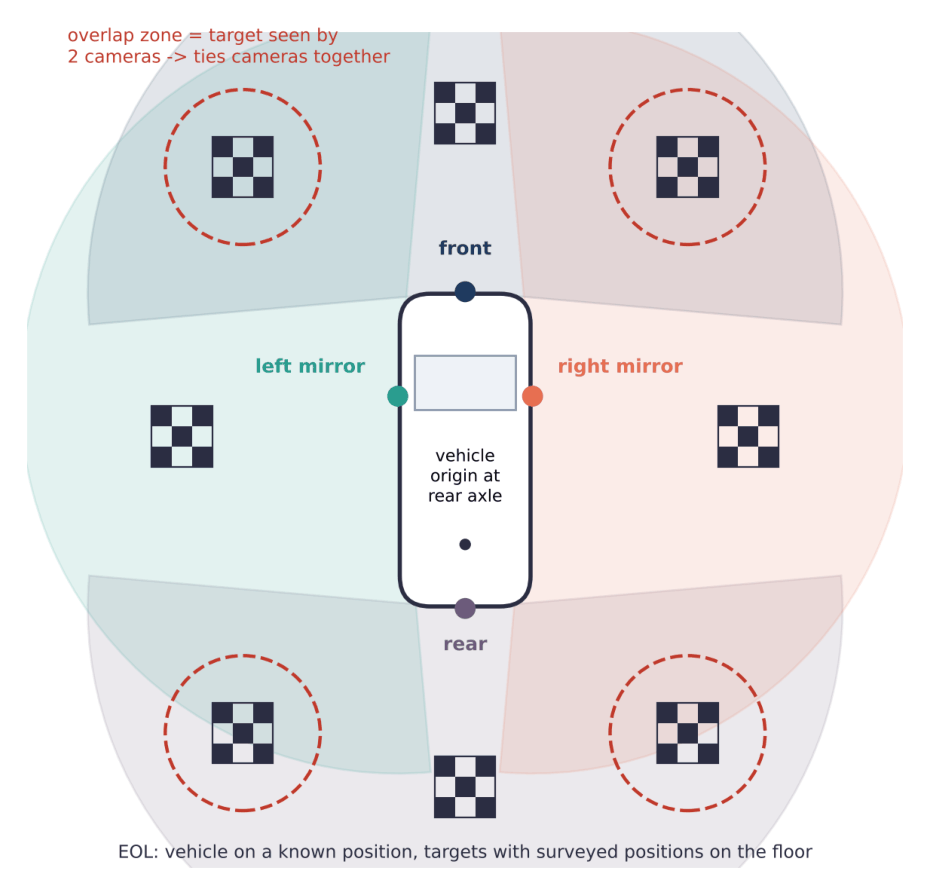
6.2From ground plane to bird's-eye view
The top view assumes that everything is on the ground. For a point on the ground plane (Z = 0 in the vehicle frame) the projection reduces to a homography, exactly as with Zhang's planar pattern. With a fisheye camera we cannot write it as a single 3x3 matrix, but the principle is the same: for every pixel of the output top-view grid (a metric position X, Y on the ground) compute the 3D point (X, Y, 0), transform it into each camera with its extrinsics, project with its fisheye model, and store the source pixel in a LUT. At runtime the top view is just four remaps and a blend.
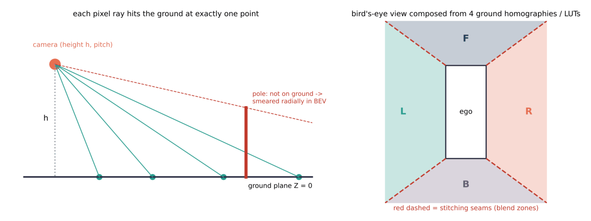
Why tall objects look strange in the top view
A pole is not on the ground, so its upper pixels are mapped to ground points far behind it: it appears as a long streak pointing away from the camera. Near a seam, the two cameras see it from different positions, so it is stretched in two different directions - and can even vanish in the blending zone. This is a property of the ground-plane assumption, not a calibration error. The 3D bowl view and dynamic seam placement (moving the seam away from detected obstacles) reduce, but cannot remove, the effect.
6.3Why calibrate the cameras jointly
Calibrating each camera separately with PnP gives four independent poses, each with its own small error. At the seams, the errors of two cameras add up and lane markings or parking lines break visibly - a few centimetres of mismatch is clearly visible to the customer. Joint calibration uses targets in the overlap zones: a target seen by two cameras must project consistently into both, which ties the cameras together. All poses are estimated in one optimisation:
Here c runs over cameras, k over targets, j over corners on a target, πc is camera c's fisheye projection, ρ is a robust loss (Chapter 9), and Tk is the pose of target k. The last term lets targets move within their survey uncertainty - so the floor layout does not have to be perfect, while the vehicle frame is still anchored. Typical unknowns: 4 x 6 camera parameters (often only the rotations plus height are free) and optionally a few target poses.
What the joint solution buys you
- Seam consistency, the customer-visible quality metric, is optimised directly.
- Redundancy: each corner target constrains two cameras, so a mis-detected target shows up as an outlier instead of silently corrupting one camera.
- Gauge fixing: the solution is anchored to the vehicle frame through the surveyed targets (or through the CAD nominal positions with priors), so the top view is metrically correct, not just internally consistent.
Photometric side of stitching
Geometry is half the job. The four cameras have independent exposure and white balance, and different lens shading. In the overlap zones the system estimates per-camera gain (and sometimes colour) corrections so the same asphalt has the same brightness in both cameras, then blends across the seam with a gradual alpha ramp or multi-band blending (low frequencies blended over a wide zone, details over a narrow one).
6.4Online (targetless) calibration
Online calibration continuously re-estimates the extrinsics while driving, using the environment instead of targets. It corrects slow changes (load, tyre pressure, wear) and can replace workshop calibration after repairs. The main sources of information:
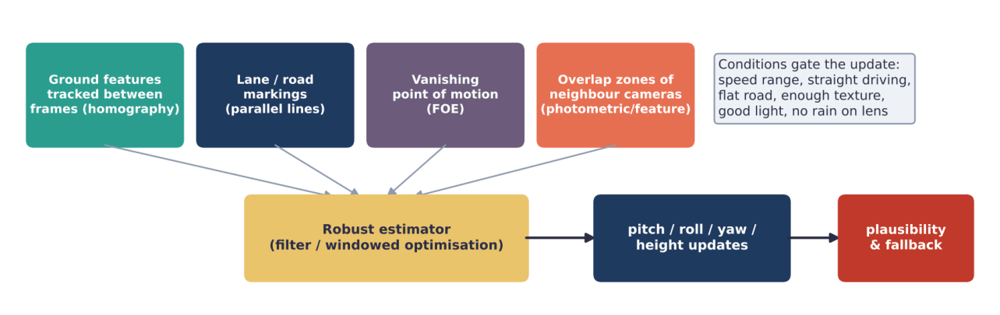
- Ground-plane motion. Features on the road are tracked between frames. Because the road is a plane, the motion of road features is a plane-induced homography H = K(R - t nT/d)K-1, where (R, t) is the camera motion, n the plane normal and d the camera height. Vehicle odometry gives the motion; the homography then reveals n and d, i.e. the camera's pitch, roll and height above the road. This is the workhorse for SVM online calibration.
- Straight-driving geometry. When the car drives straight, ground features move along parallel lines in the vehicle frame; their apparent convergence point in the image (the focus of expansion, FOE) reveals the camera yaw and pitch relative to the driving direction.
- Lane and road markings. In a correct top view, lane markings are parallel and have constant width; deviations indicate pitch/roll errors. Vanishing points of lane lines give pitch and yaw for front cameras.
- Neighbour consistency. Features or texture in the overlap zone must map to the same ground point from both cameras.
All of these are noisy and only valid in certain conditions, so online calibration is fundamentally a filtering problem: measurements are accepted only when gating conditions hold (speed range, low yaw rate, flat road, enough texture, no rain or dirt), accumulated over minutes of driving, and fused in a Kalman filter or a sliding-window optimisation. The output carries a confidence; downstream functions use it only once it has converged, and plausibility checks keep it within mechanical limits.
Customer questions about SVM calibration
- "What happens if the car is fully loaded?" - Pitch and height change; the online calibration tracks it, typically within minutes of normal driving; until then, the last valid calibration is used.
- "How accurate is it?" - Express accuracy in the customer's terms: seam misalignment in cm on the ground at a given distance, and straight-line continuity across seams, not degrees.
- "Do we still need EOL calibration?" - Usually yes as a known good starting point; online calibration keeps it correct over life and can reduce workshop effort.
7Features: Detection, Description and Matching
Geometry algorithms do not work on images; they work on correspondences - the same physical point found in two images. Feature detectors and descriptors are the machinery that produces them.
7.1What makes a good feature
A good feature is a point that can be found again: in the next frame, in another camera, under a different exposure, after the car has moved. That requires three properties. Repeatability: the detector fires at the same physical point despite changes in viewpoint, scale and lighting. Distinctiveness: its neighbourhood looks different from other points, so it can be matched unambiguously. Localisation accuracy: its position is well defined in both directions. A point in a uniform region fails all three; a point on a straight edge can slide along the edge (the aperture problem, Chapter 11); a corner or blob is well defined.
7.2Harris and Shi-Tomasi corners
Move a small window over the image and ask: if I shift the window a little in any direction, does the content change? For a corner, every shift changes it. Expanding this "sum of squared differences after a shift" to first order gives a 2x2 matrix built from image gradients Ix, Iy summed (with Gaussian weights w) over the window - the structure tensor:
The eigenvalues of M are the amount of intensity change in the two principal directions. Both small: flat. One large: edge. Both large: corner. Harris (1988) avoids computing eigenvalues with a determinant/trace score; Shi and Tomasi (1994) showed that taking the smaller eigenvalue directly gives better points for tracking - their paper is literally titled "Good Features to Track". Non-maximum suppression then keeps local maxima, and a minimum distance between features spreads them over the image.
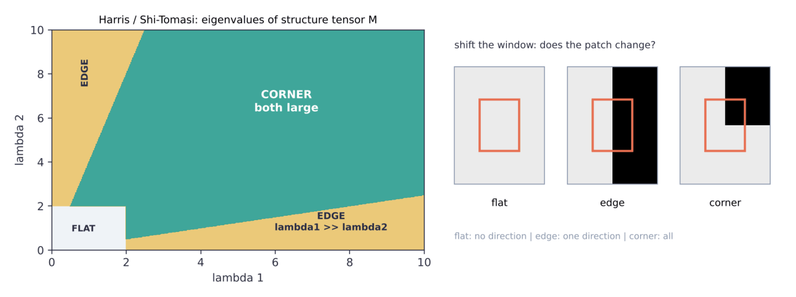
7.3FAST: corners at embedded speed
FAST (Features from Accelerated Segment Test, Rosten & Drummond 2006) looks at the 16 pixels on a circle of radius 3 around a candidate. If at least N contiguous pixels (typically 9 or 12) are all brighter than the centre plus a threshold, or all darker, it is a corner. A quick pre-test on just 4 pixels rejects most candidates immediately. No gradients, no floating point - just comparisons, which map extremely well to SIMD units and DSPs. FAST has no notion of scale or orientation and responds to edges somewhat, so it is usually combined with a Harris score for ranking and with an image pyramid for scale (as in ORB).
7.4SIFT: the reference for invariant features
SIFT (Scale-Invariant Feature Transform, David Lowe 1999/2004) solved a harder problem: match points between images taken at different scales and rotations, e.g. an object seen from 2 m and 10 m. It is still the quality reference against which other features are compared, and since its patent expired in 2020 it is freely usable. It has four stages.
Stage 1: scale-space extrema
Blur the image with Gaussians of increasing σ. Fine details disappear first, coarse structures survive longer. The Difference of Gaussians (DoG) between neighbouring blur levels is a cheap approximation of the scale-normalised Laplacian - a blob detector. A keypoint is a pixel that is larger (or smaller) than all 26 neighbours: 8 in its own DoG image and 9 each in the scale above and below. The scale at which it is extremal is the feature's characteristic size. After each octave (doubling of σ) the image is downsampled by 2, keeping the cost bounded.
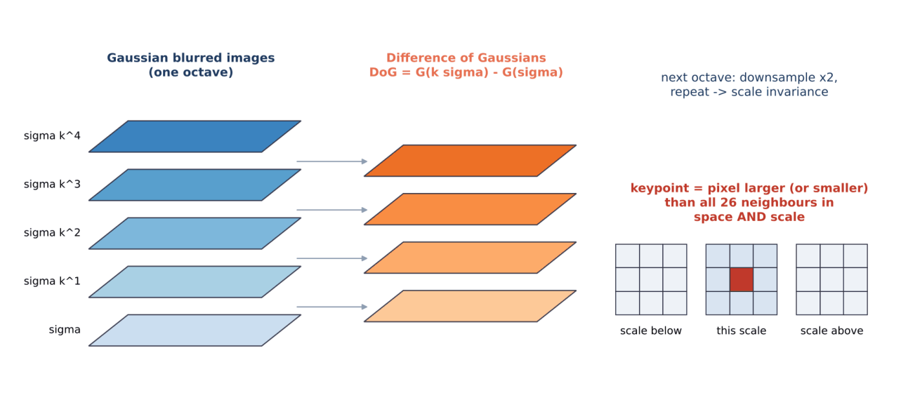
Stage 2: precise localisation
A quadratic fit through the neighbouring DoG values refines the position and scale to sub-pixel/sub-scale accuracy. Low-contrast points are discarded (unstable under noise), and so are points on edges, using the ratio of eigenvalues of the 2x2 Hessian - the same edge-vs-corner logic as Harris.
Stage 3: orientation
A histogram of gradient directions in the keypoint's neighbourhood (36 bins, weighted by gradient magnitude and a Gaussian) gives a dominant orientation. Peaks above 80% of the maximum create additional keypoints with those orientations. Everything afterwards is computed relative to this orientation, which makes the descriptor rotation-invariant.
Stage 4: the descriptor
Take a 16x16 sample grid around the keypoint, scaled to its size and rotated to its orientation. Divide it into 4x4 cells and compute an 8-bin gradient orientation histogram in each: 4 x 4 x 8 = 128 numbers. Normalise the vector to unit length (invariance to contrast), clip values above 0.2 (reduces the influence of large gradients from non-linear illumination such as specular highlights), and renormalise.
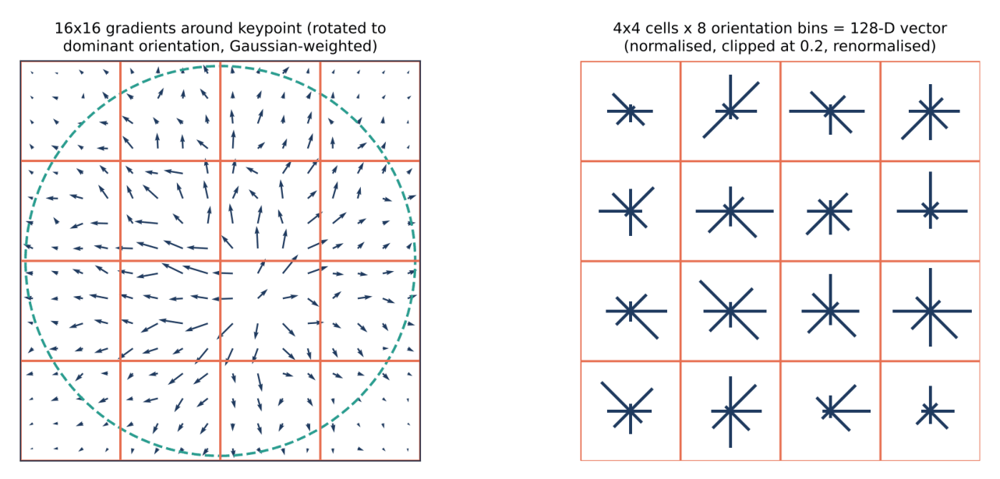
Why histograms of gradients work so well
Gradients are insensitive to brightness offsets; normalisation removes contrast changes; pooling into cells tolerates a few pixels of misalignment and small perspective distortion. This "histogram of oriented gradients" idea also powers the HOG pedestrian detector (Chapter 16) and was the dominant image representation before CNNs.
7.5Binary descriptors: ORB and friends
SIFT is accurate but expensive (floating-point 128-D vectors, Euclidean distances). Binary descriptors compare pairs of pixel intensities in a smoothed patch: "is pixel A brighter than pixel B?" gives one bit. 256 such tests give a 32-byte descriptor (BRIEF). Matching uses the Hamming distance: XOR the two descriptors and count bits, a single POPCNT-type instruction per 64 bits. ORB (Oriented FAST and Rotated BRIEF, 2011) adds a FAST detector on an image pyramid with Harris ranking, an orientation from the intensity centroid of the patch, and a learned set of test pairs that are uncorrelated and discriminative. ORB is the feature behind ORB-SLAM and many embedded VO systems.
| Method | Detector | Descriptor | Invariance | Cost | Typical use |
|---|---|---|---|---|---|
| Shi-Tomasi + KLT | min eigenvalue | none (patch tracking) | small motion only | very low | frame-to-frame tracking, VO front-ends |
| FAST | segment test | none | none | lowest | fast detection on DSP; base for ORB |
| SIFT | DoG extrema | 128-D float histogram | scale, rotation, illumination; some viewpoint | high | offline mapping, SfM, reference quality |
| SURF | Hessian via box filters / integral images | 64-D float | like SIFT | medium | historical speed-up of SIFT |
| ORB | FAST + pyramid + Harris | 256-bit binary | scale, rotation | low | real-time SLAM, relocalisation |
| AKAZE | non-linear scale space | binary (M-LDB) | scale, rotation; good edge preservation | medium | good quality/speed compromise |
7.6Matching
Matching finds, for each descriptor in image A, the most similar descriptor in image B. Brute force compares all pairs - fine for a few thousand features on a GPU or with binary descriptors; approximate nearest neighbour structures (k-d trees, hierarchical clustering, as in FLANN) scale to large maps. Raw nearest neighbours contain many wrong matches, so three filters are standard:
- Lowe's ratio test: accept a match only if the best distance is clearly smaller than the second best (ratio below ~0.7-0.8). In repetitive structures (fences, parking lines, building facades) the two best candidates are similar and the match is rejected as ambiguous - exactly what we want.
- Cross-check: keep the pair only if A's best match is B and B's best match is A.
- Geometric verification: fit a homography or epipolar geometry with RANSAC (Chapters 8-9) and keep only matches consistent with it. This is the step that turns "looks similar" into "is the same 3D point".
Detect-and-match vs track
Between consecutive video frames, motion is small and the appearance hardly changes. Here it is cheaper and more accurate to track features (KLT, Chapter 11) than to detect and match them independently in each frame. Descriptor matching is used when the gap is large: re-finding a place in a map, matching between different cameras, or recovering after the track is lost.
8Two-View Geometry
What can be inferred from two images of the same scene? Depending on the scene and the motion, two views are related by a homography or by epipolar geometry - and from those we get relative motion and 3D structure.
8.1The homography: planes and pure rotation
A homography is a 3x3 matrix H (8 degrees of freedom, defined up to scale) that maps points of one image to the other: x' ~ H x. It is exact in two situations: when all points lie on one plane (the road, a wall, a calibration board), or when the camera only rotates around its centre (no translation, so no parallax). For the plane case with normal n at distance d from the first camera:
Each point correspondence gives two linear equations in the 9 entries of H, so 4 points suffice. The Direct Linear Transform (DLT) stacks the equations for all points into a matrix A and finds H as the right singular vector of A with the smallest singular value. One practical detail matters a lot: Hartley normalisation - translate and scale the points so their centroid is at the origin and the average distance is √2 before the DLT, then undo it. Without it, pixel coordinates of ~1000 next to constants of 1 make the problem badly conditioned, and the result can be noticeably wrong, especially in single-precision float on embedded targets.
Homographies in the car
- Bird's-eye view generation for perspective cameras (ground-plane mapping).
- Online calibration from road texture motion (Chapter 6).
- Image stabilisation and rotation compensation (pure rotation case).
- Planar target detection at EOL (the target plane maps to the image by a homography).
8.2Epipolar geometry
For a general 3D scene and a camera that translates, there is no single mapping between images: where a point appears in image 2 depends on its unknown depth. But it is not arbitrary. The 3D point, both camera centres and both image points lie in one plane, the epipolar plane. So the match of x1 must lie on a line in image 2, the epipolar line. All epipolar lines pass through the epipole, the image of the other camera's centre.
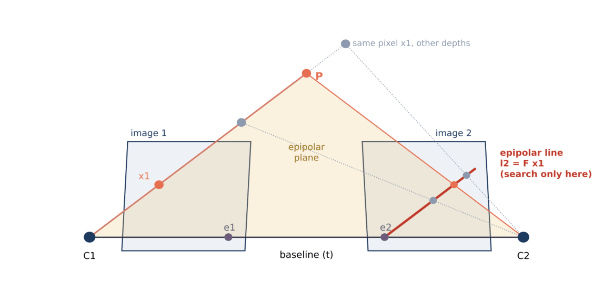
This constraint is captured by the essential matrix E (for normalised coordinates, intrinsics removed) and the fundamental matrix F (for pixel coordinates):
\([t]_{\times}\) is the cross-product matrix of the translation. E has 5 degrees of freedom: 3 for rotation and 2 for the direction of translation. The length of t cannot be recovered from images alone - a small scene close by and a large scene far away, with proportionally larger motion, produce identical images. This scale ambiguity is the defining property of monocular vision.
Estimating E or F
- 8-point algorithm (F, uncalibrated): linear, like the DLT, followed by forcing rank 2. Needs Hartley normalisation.
- 7-point algorithm: uses the rank-2 constraint directly; up to 3 solutions.
- 5-point algorithm (Nistér 2004, E with known intrinsics): minimal, up to 10 solutions, the standard inside RANSAC for calibrated cameras because fewer points per sample means far fewer iterations (Chapter 9).
Decomposing E gives four combinations of (R, t). Only one places the triangulated points in front of both cameras - the cheirality check picks it.
Degenerate configurations
Epipolar geometry fails in situations that are common in cars, and knowing them prevents a lot of debugging:
- No translation (standing still, or pure rotation): E is undefined; use a homography instead.
- Planar scene (only road visible): F is not unique. Robust systems estimate both H and F and choose by a model-selection score (as ORB-SLAM does at initialisation).
- Forward motion: the epipole is the focus of expansion, inside the image. Points near the FOE have almost no parallax, so their depth is poorly determined. For a front camera on a car driving straight, the most important region - straight ahead - is the worst for motion-based 3D.
8.3Triangulation
Given the relative pose and a correspondence, the 3D point is where the two rays meet. With noise they do not meet exactly, so we choose the point that best explains the observations: the linear DLT solution (fast), the midpoint of the shortest segment between the rays (intuitive), or the point that minimises reprojection error in both images (optimal, refined by Gauss-Newton). The key quantity for quality is the parallax angle between the rays.
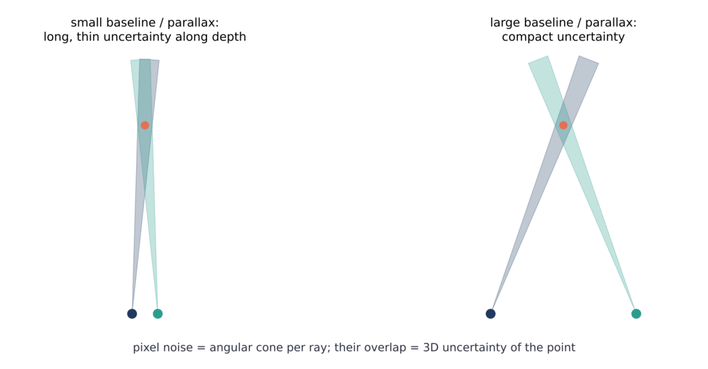
Depth from parallax
Depth uncertainty grows roughly with Z2/(baseline): halving the baseline doubles the depth error; doubling the distance quadruples it. The same law governs stereo cameras (Chapter 14), motion stereo and SfM. Systems therefore keep only points whose parallax angle exceeds a threshold (often 1-2°).
9Robust Estimation and Optimisation
Two engines run under almost every algorithm in this handbook: RANSAC to survive wrong data, and non-linear least squares to squeeze the best estimate out of the right data.
9.1RANSAC
Least squares is optimal for Gaussian noise but a single gross outlier can ruin it, and feature matches typically contain 20-60% outliers. RANSAC (Random Sample Consensus, Fischler & Bolles 1981) turns the problem around: instead of using all the data to fit a model, it repeatedly fits a model to a minimal random sample and counts how many data points agree with it.
- Pick a minimal sample: 2 points for a line, 4 for a homography, 5 for E, 3 for P3P.
- Fit the model to the sample.
- Count inliers: points whose error (e.g. reprojection or epipolar distance) is below a threshold.
- Keep the model with the most inliers; repeat N times.
- Refit the final model on all inliers with least squares (and optionally re-classify inliers and repeat).
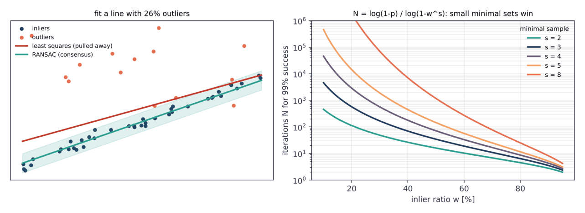
The number of iterations follows from probability: if a fraction w of the data are inliers, a sample of s points is all-inlier with probability ws. To find at least one clean sample with confidence p:
With 50% inliers and p = 99%: a 5-point sample needs ~145 iterations, an 8-point sample ~1200. This is why minimal solvers (5-point for E, P3P for pose) matter so much in real-time systems, and why prior information that reduces s is valuable: if the vehicle's motion is planar and known from odometry, relative pose can be estimated with 1 or 2 points.
Practical variants
| Variant | Idea | When |
|---|---|---|
| PROSAC | Sample from the best-ranked matches first (by descriptor ratio) | Matches have a quality score - finds good models in few iterations |
| LO-RANSAC | Run a local optimisation on each new best model | Higher accuracy, more stable inlier sets |
| MSAC / MLESAC | Score by truncated residuals or likelihood instead of inlier count | Less sensitive to the threshold choice |
| MAGSAC++ | Marginalise over the noise scale | When the right threshold is unknown |
| Preemptive RANSAC | Fixed hypothesis budget evaluated in blocks | Hard real-time limits |
RANSAC on a safety-relevant ECU
RANSAC is randomised: the same input can give slightly different outputs. For reproducible tests (SIL/HIL re-simulation, regression of KPIs) use a seeded deterministic generator and a fixed, bounded iteration budget, and record the inlier ratio as a quality signal. A sudden drop in inlier ratio is an excellent indicator of a degraded camera (rain, dirt, blockage) or broken calibration.
9.2Non-linear least squares: Gauss-Newton and Levenberg-Marquardt
Calibration, PnP refinement, bundle adjustment, VO and pose-graph optimisation are all the same mathematical problem: find parameters x that minimise a sum of squared residuals r(x), such as reprojection errors. The residuals are non-linear in x (rotations, division by depth), so we iterate: linearise around the current estimate with the Jacobian \(J = \partial r/\partial x\), solve a linear least-squares problem for the step Δx, update, repeat.
With μ = 0 this is Gauss-Newton: fast near the solution but can diverge from a poor start. Levenberg-Marquardt adds the damping term: large μ makes it a cautious gradient-descent step, small μ makes it Gauss-Newton. μ is decreased after a successful step and increased after a failed one. Two practical points: the start must be reasonably close (which is why every method first uses a linear or minimal solver), and rotations must be updated on the manifold - apply a small 3-parameter rotation increment as \(R \leftarrow \exp([\delta\theta]_{\times})\,R\) rather than adding to the 9 matrix entries or to Euler angles.
9.3Robust loss functions
Inside the optimiser, a few outliers that survived RANSAC can still pull the solution. M-estimators replace the square with a function that grows more slowly for large residuals: the Huber loss is quadratic for small errors and linear beyond a threshold; Cauchy and Tukey losses flatten out further, effectively ignoring gross outliers. They are implemented by iteratively re-weighting residuals (IRLS) and are standard in bundle adjustment and calibration.
Covariance: the free by-product
At the solution, (JTJ)-1 scaled by the residual variance approximates the covariance of the estimated parameters. This is how a calibration reports "pitch = 11.82° ± 0.03°", how online calibration decides it has converged, and how a VO system tells the fusion layer how much to trust it. An estimate without an uncertainty is hard to use in a safety argument.
10PnP: Camera Pose from Known 3D Points
Perspective-n-Point is the bridge between a known 3D world and a camera image. It is the core of pattern-based extrinsic calibration and of relocalising a camera in a map.
10.1The problem
Given n 3D points Xi in some world frame (target corners surveyed in the vehicle frame, landmarks in a map), their measured image positions xi, and the intrinsics, find the camera rotation R and translation t - 6 unknowns. Each point gives 2 equations, so 3 points are the minimum. Unlike the two-view case there is no scale ambiguity: the 3D points carry metric scale.
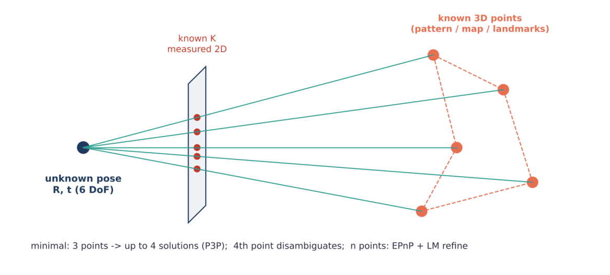
10.2The solvers
| Solver | How it works | Use |
|---|---|---|
| P3P (Grunert; Kneip 2011; Lambda Twist 2018) | Law of cosines on the triangle of 3 points and their 3 rays gives the 3 distances; up to 4 solutions, a 4th point selects one | Minimal solver inside RANSAC |
| EPnP (Lepetit 2009) | Expresses all points as weighted sums of 4 virtual control points; solves for the control points linearly; O(n) | Fast initial solution for many points |
| DLT (6+ points) | Estimates the full 3x4 projection matrix linearly, then decomposes | Uncalibrated cameras; rarely in production |
| IPPE (planar) | Exploits the homography of a planar target; returns both candidate poses | Single planar targets, markers, AR tags |
| Iterative (LM) | Minimises reprojection error starting from any of the above | Always the final refinement step |
The standard recipe in practice: P3P inside RANSAC to reject outliers (wrong target IDs, mismatched map points), EPnP on all inliers for a good start, then Levenberg-Marquardt on the reprojection error - including the lens distortion or fisheye model, which is easiest to handle by working with unit bearing vectors instead of undistorted pixels.
10.3Where PnP is used
- EOL and service extrinsic calibration with surveyed targets (Chapter 5).
- Relocalisation in a map: a memory-parking system recognises stored landmarks, matches them, and computes the current camera pose with PnP.
- VO tracking against a local map: the 3D-2D approach in Chapter 12.
- Trailer angle estimation: some trailer-assist systems use a target sticker on the trailer drawbar whose geometry is known; PnP on the rear camera gives the hitch angle.
- Hand-eye and sensor-to-sensor calibration: camera-to-LiDAR or camera-to-radar with a target seen by both.
When PnP becomes unreliable
- Small, distant targets: rotation and translation become coupled (a small rotation looks like a small lateral shift). Spread targets across the field of view and at different depths.
- Planar targets seen frontally: two poses (mirrored tilt) fit almost equally well - the classic planar ambiguity. Use multiple targets, non-planar arrangements, or priors from the nominal mounting.
- Wrong correspondences: a single swapped corner ID gives a confidently wrong pose without RANSAC.
- Intrinsics errors become extrinsic errors: PnP assumes K and distortion are right.
11Motion Estimation: Optical Flow
Optical flow is the apparent motion of image content between frames. It is the most direct measurement of motion a camera can make, and it feeds ego-motion, obstacle detection and time-to-collision.
11.1The brightness constancy equation
Assume a point keeps its brightness while it moves by (u, v) between frames: I(x + u, y + v, t + 1) = I(x, y, t). A first-order Taylor expansion gives the optical flow constraint:
One equation, two unknowns per pixel. Geometrically: the constraint only determines the motion component along the gradient, i.e. perpendicular to the edge. This is the aperture problem - looking at a moving edge through a small hole, you cannot tell whether it slides along itself. Every flow method needs an extra assumption to resolve it.
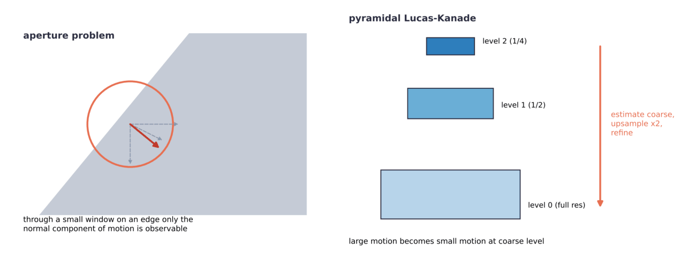
11.2Lucas-Kanade: assume the neighbourhood moves together
Lucas and Kanade (1981) assume that all pixels in a small window (e.g. 7x7 to 21x21) share the same (u, v). That gives one equation per pixel and an over-determined system solved by least squares:
The matrix is exactly the structure tensor of the Harris/Shi-Tomasi detector. It is invertible and well conditioned only when both eigenvalues are large - i.e. at a corner. That is the deep reason why "good features to track" are Shi-Tomasi corners: the detector selects precisely the points where the tracker is well-posed. The combination is called KLT (Kanade-Lucas-Tomasi).
Making it work in practice
- Iterate: the Taylor expansion is only valid for small motion, so warp the window by the current estimate and solve again (Newton-style), typically 5-20 iterations with sub-pixel bilinear sampling.
- Pyramids: a 40-pixel motion at full resolution is 5 pixels at 1/8 resolution. Estimate at the coarsest level, scale up, refine at each finer level.
- Validation: track forward then backward; if the point does not return to where it started (forward-backward error above ~0.5-1 px), drop it. Also check the final residual (NCC or SSD) and the minimum eigenvalue.
- Illumination: add a gain and offset per window to the model, or track on gradient images, to survive exposure changes.
11.3Dense flow
Sparse KLT gives flow at a few hundred to a few thousand points. Dense methods estimate a vector at every pixel. Horn-Schunck (1981) adds a global smoothness term and solves a large variational problem; Farnebäck (2003) approximates each neighbourhood with a quadratic polynomial and derives displacement from how the polynomial shifts. Modern variational methods add robust penalties that preserve motion boundaries. In embedded systems, dense flow is usually computed by block matching in dedicated hardware: for each block, search the best-matching block in the previous frame within a search range, often with census or other illumination-robust costs, followed by smoothing and sub-pixel refinement. Many automotive SoCs include such a dense optical flow accelerator, frequently sharing logic with the stereo disparity engine because both are correspondence searches.
11.4What flow is used for
Ego-motion
For a static scene, the flow field is fully determined by the camera's rotation, translation and the depth of each point. Rotation produces flow that does not depend on depth; translation produces flow that radiates from the focus of expansion and scales with inverse depth. Fitting this model to the flow (with RANSAC) gives the camera's motion - this is how flow feeds visual odometry and online calibration.
Moving object detection
Once ego-motion is known, the expected flow of a static world can be predicted for every pixel (exactly for the ground plane, using the plane homography). Pixels whose measured flow disagrees are candidates for independently moving objects. This is the classic basis of rear cross-traffic alert with fisheye cameras and of generic moving-object detection - it detects anything that moves, without knowing what it is.
Time to collision without distance
An approaching object grows in the image. If its image size is s and grows at rate ds/dt, the time to collision is TTC = s / (ds/dt) - no distance, no calibration and no object size needed. The scale change can be measured from the divergence of the flow inside the object or from the changing distance between tracked feature points on it. TTC from scale change is a classic and robust cue for monocular forward-collision warning.
Flow failure modes
- Low texture (clean car paint, wet road, sky), repetitive texture (fences, crosswalks), occlusion boundaries.
- Rolling shutter and motion blur at high yaw rates.
- ISP temporal noise reduction and HDR merge creating trails or ghost edges on moving objects.
- Exposure jumps violating brightness constancy - one more reason to use illumination-robust costs.
12Visual Odometry and SLAM
Visual odometry estimates how the camera - and therefore the car - moved, from the images alone. SLAM additionally builds a map and recognises places to correct accumulated drift.
12.1Why the car needs it
Wheel odometry is cheap and good for short distances but suffers from wheel slip, tyre radius changes and poor heading over time; GNSS is unavailable in garages and parking structures and is too imprecise for centimetre-level manoeuvres. Visual odometry provides ego-motion that is independent of the wheels, useful for: accumulating parking-slot and obstacle observations over time, stitching sequences (e.g. the "transparent hood / under-car view" that shows the ground under the car from earlier frames), online calibration, and memory parking (trained parking) where the car follows a previously recorded route using a visual map.
12.2The pipeline
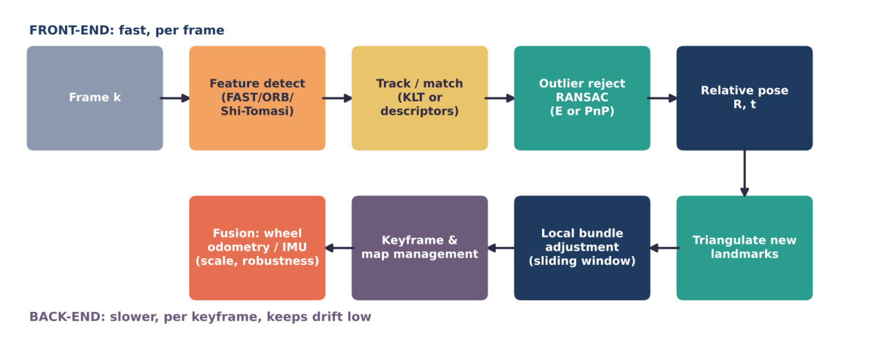
The front-end establishes correspondences and an initial motion estimate. Three formulations exist, and the choice is worth understanding:
| Formulation | Uses | Solver | Comment |
|---|---|---|---|
| 2D-2D | Matches between two images | 5-point E + RANSAC, then decompose | Needed for initialisation; scale unknown; degenerate when stationary or planar |
| 3D-2D | Previously triangulated landmarks vs current image | PnP + RANSAC | Standard for tracking: consistent scale, robust, fast |
| 3D-3D | Point clouds from stereo or depth at both times | Umeyama / Horn closed form, ICP | Stereo VO; sensitive to depth noise at range |
Keyframes are selected frames (e.g. when the camera has moved enough or tracking quality drops) that are kept for mapping; other frames are only tracked. The back-end runs a local bundle adjustment over the last N keyframes and the landmarks they see (Chapter 13), which significantly reduces drift.
12.3The scale problem and how cars solve it
A single camera recovers motion only up to an unknown scale (Chapter 8), and that scale slowly drifts. Cars have several elegant ways out:
- Known camera height above the road. If the ground plane is visible, its estimated distance in VO units can be compared with the calibrated mounting height; the ratio is the metric scale. This is possibly the most important automotive trick for monocular VO.
- Wheel odometry provides metric distance; VO provides rotation and robustness to slip. A filter fuses both.
- Stereo or multi-camera rigs with known baseline: the surround-view cameras form a rig with known extrinsics, and features seen in two cameras give metric depth.
- IMU fusion (visual-inertial odometry): the accelerometer measures metric acceleration; gravity gives an absolute pitch and roll reference.
12.4Feature-based vs direct methods
Feature-based methods (e.g. ORB-SLAM) reduce images to keypoints and minimise reprojection error - robust to illumination changes and large motions, with a clean separation into matching and geometry. Direct methods (LSD-SLAM, DSO) skip features and minimise photometric error - the brightness difference of pixels warped by the estimated motion and depth. They use all gradients, including edges and weak texture (useful on asphalt), but need good photometric calibration (exposure times, vignetting, camera response) and small inter-frame motion. Here the ISP becomes part of the algorithm: a direct method practically requires the exposure value per frame.
12.5From odometry to SLAM
Odometry is incremental, so errors accumulate: a 1% drift means 1 m after 100 m. SLAM adds two ingredients. Place recognition notices that the car is back at a known place, typically with a bag of visual words: descriptors are quantised into a vocabulary, each image becomes a histogram of words, and similar histograms indicate the same place (then verified geometrically with PnP/RANSAC). Loop closure then adds a constraint between the current and the old pose and distributes the accumulated error over the trajectory, usually with a pose-graph optimisation: nodes are keyframe poses, edges are relative-motion measurements with covariances, solved with the same Gauss-Newton/LM machinery, followed by a global bundle adjustment.
Memory parking in one paragraph
During a training drive, the system runs visual SLAM and stores a sparse map: 3D landmarks with descriptors and the driven trajectory, anchored to the start position. On later drives it recognises the start area (place recognition), localises with PnP against the map, and controls the car along the stored path while continuously re-localising. Key challenges are appearance change (day/night, seasons, parked cars that move), map size in flash, and proving localisation integrity.
Filtering vs optimisation
Early SLAM used an EKF over a state containing the pose and all landmarks (EKF-SLAM), which scales quadratically with map size. Visual-inertial systems such as MSCKF keep landmarks out of the state and use them only as constraints between poses - efficient enough for embedded processors. Today, sliding-window optimisation with marginalisation (keyframe BA plus IMU pre-integration) is the dominant design, but filter-based VIO remains popular where compute is tight.
13Structure from Motion and Bundle Adjustment
SfM reconstructs 3D structure and camera poses jointly from many images. Bundle adjustment is the optimisation at its heart, and it is also the final step of calibration and VO.
13.1Incremental SfM
Offline SfM (the approach of tools like COLMAP) takes an unordered image collection and builds a 3D model. The steps reuse everything seen so far:
- Detect features (SIFT) in all images and match image pairs; verify each pair geometrically (E/F or H with RANSAC).
- Choose an initial pair with many matches and enough parallax; estimate E, decompose, triangulate.
- Register the next image with PnP against the already-triangulated points.
- Triangulate new points seen by the new image and at least one registered image.
- Run bundle adjustment; remove points with large residuals; repeat until all images are registered.
In automotive development SfM is used offline: building maps, generating ground-truth trajectories and 3D reconstructions from recorded drives, and refining camera rig calibrations from real driving data.
13.2Bundle adjustment
The name refers to the "bundles" of rays leaving each camera that are adjusted until they pass through their 3D points. Formally, it minimises the total reprojection error over all camera poses and all 3D points (and optionally intrinsics):
With 100 keyframes and 50,000 points, that is 600 + 150,000 unknowns - too large for naive solvers. The trick is sparsity: every observation involves exactly one camera and one point, so the Jacobian is almost empty, and the normal-equation matrix H = JTJ has a characteristic "arrowhead" structure. The point-point block is block-diagonal (3x3 blocks), so it can be inverted trivially, and the Schur complement eliminates all points to leave a small system for the cameras only. Solve for the camera updates, then back-substitute the point updates one by one.
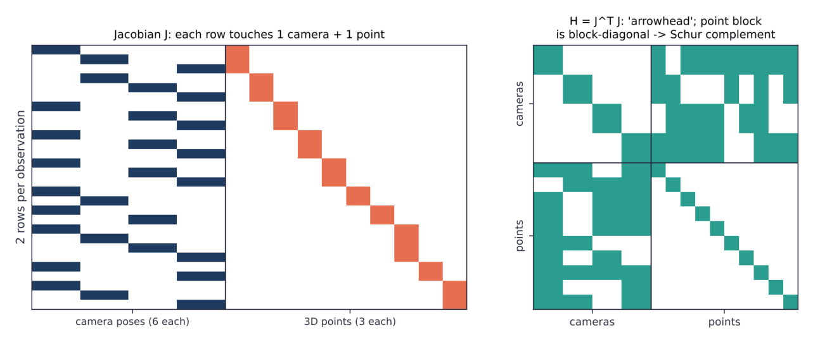
Gauge freedom
If you rotate, translate and scale the whole reconstruction together, all reprojection errors stay the same. A monocular BA has 7 such free directions (a similarity transform), a stereo or metric rig 6. The optimiser must be told what is fixed - e.g. the first camera's pose and the distance to the second - otherwise the normal equations are singular. In calibration problems the targets' surveyed coordinates fix the gauge.
13.3Motion stereo for parking
A fisheye camera on a slowly moving car is a natural SfM setup: two frames taken 20-50 cm apart form a "stereo pair" with a baseline given by odometry. Tracking features and triangulating them produces a sparse 3D point cloud of the near field - pillars, kerbs, other cars' bumpers - which is clustered into obstacles for parking. Known limitations follow directly from the geometry: no depth when stationary; poor depth near the focus of expansion (straight ahead in the driving direction); moving objects violate the static-scene assumption and get wrong depths; untextured surfaces (white walls) produce no points. This is why parking systems fuse motion stereo with ultrasonic sensors and with neural depth or free-space estimation.
Explaining SfM/BA in one sentence
"We move the cameras and the 3D points around in software until every point projects exactly where we saw it in every image; the configuration that explains all observations best is our reconstruction, and the remaining mismatch tells us how much to trust it."
13.4How uncertainty propagates through a multi-view pipeline
Why it matters. A multi-view pipeline is a chain of estimators: corners are detected with some pixel noise, matched, triangulated into points, used to estimate poses, refined in bundle adjustment, and finally handed to a fusion or planning stage that needs to know how far to trust each number. A depth of 40 m means little without knowing whether it is ±0.5 m or ±5 m, and the safety argument of any function that uses it rests on that error bar. This section follows the error through the chain. The general tools, first-order propagation through a Jacobian and Monte Carlo, are explained in Mathematics: the Jacobian and applied to calibration and timing errors in Calibration and fusion 10.2; here they are applied to geometry from images.
First order: the Jacobian carries the covariance. If an output y = f(x) depends on noisy inputs with covariance Σx, then to first order Σy = J Σx Jᵀ, where J is the matrix of partial derivatives of f. For a rectified stereo pair with focal length f (pixels) and baseline b, depth is Z = f b / d with disparity d, so ∂Z/∂d = −Z²/(f b). With pixel noise σ in each image the disparity noise is √2 σ, and
The square is the whole story of stereo range. With f = 1 200 px, b = 0.3 m and σ = 0.25 px, the depth standard deviation is 10 cm at 10 m, 39 cm at 20 m, 1.6 m at 40 m and 6.3 m at 80 m. Tripling the baseline to 1 m brings 40 m back to 47 cm. The lateral error, by contrast, grows only linearly with depth (3 mm at 20 m in the same setup), so the uncertainty region of a triangulated point is a long thin ellipse pointing along the viewing ray, 133 times longer than wide at 20 m. Figure 13.2 lets you vary all four inputs.
Where first order breaks. Z = f b / d is a curved function of d, and at small disparities the curvature dominates. A disparity error that brings d close to zero sends Z towards infinity, while the same error in the other direction changes Z only a little. The distribution of the reconstructed depth is therefore skewed, with a long tail towards large depth. In the simulation at 80 m (disparity 4.5 px) the Monte Carlo mean is 0.5 m too far while the median is correct; with a 0.12 m baseline and σ = 0.5 px at 60 m (disparity 2.4 px) the Monte Carlo standard deviation is 84 m against 18 m predicted to first order, and some samples even get a negative disparity. This is why SLAM systems parametrise distant points by inverse depth ρ = 1/Z: the disparity, and hence ρ, is close to Gaussian even when Z is not, so a Kalman filter or a least-squares solver can work with it. A useful rule: trust a linearised depth covariance only while the disparity noise is a small fraction of the disparity, and check the rest with Monte Carlo.
Calibration errors do not average out. Pixel noise is different in every frame, so filtering over many frames reduces it. A calibration error is the same in every frame. A relative yaw error of 0.01° between the two cameras shifts every disparity by f·δ = 0.21 px; with the setup above that moves every point at 20 m by 0.24 m and every point at 40 m by 0.95 m, always in the same direction. It also scales with Z², so it competes with the noise at every range and dominates once the noise has been averaged away. In a filter such errors must be modelled as bias states or covered by an inflated, "consider" covariance; treating them as white noise makes the filter confidently wrong. This is the quantitative reason for the online calibration of Sections 5.3 and 6.4.
Monocular and motion stereo. When the second view comes from the car's own motion (Section 13.3), the baseline is the distance travelled between frames, and only its component perpendicular to the viewing ray counts. For a point straight ahead, near the focus of expansion, the effective baseline is almost zero and depth is unobservable however far the car drives; points to the side are measured well. The error of the ego-motion estimate itself enters as a calibration-like bias shared by all points in the frame pair.
Poses and bundle adjustment. For any least-squares estimate (PnP, relative pose, bundle adjustment), the same machinery gives the covariance of the result: near the optimum, Σ ≈ σ² (JᵀJ)⁻¹, the inverse of the Gauss-Newton approximation of the Hessian scaled by the measurement noise. Two complications appear in multi-view problems. First, gauge freedom: a reconstruction can be moved, rotated and (for a single camera) scaled without changing any reprojection error, so JᵀJ is singular, and covariances only exist once the gauge is fixed, for example by holding the first camera and the scale. A covariance is therefore always relative to a reference: the uncertainty of a point relative to the first camera differs from its uncertainty relative to the current one. Second, size: inverting the full matrix of a large bundle adjustment is infeasible, so the marginal covariances of individual poses or points are computed through the Schur complement, the same structure the solver uses (Section 13.2).
Accumulation over time. Visual odometry chains relative poses, so its errors add up. Independent position errors grow like the square root of the number of steps, a random walk. Heading errors are worse: a small heading error turns every later step slightly sideways, so the lateral position error grows roughly with the distance travelled to the power 1.5. That is why VO drift is quoted per distance (for example as a percentage of the path) and why loop closure or an absolute reference (GNSS, map) is needed to bound it (Section 12.5).
Checking the numbers. A propagated covariance is a claim that can be tested. In simulation, run Monte Carlo and compare the spread with the prediction, as Figure 13.2 does. On real data with ground truth, compute the normalised estimation error squared (the error weighted by the inverse covariance): averaged over many samples it should equal the number of dimensions. Values much larger mean the pipeline is overconfident, usually because a bias was treated as noise or a correlation was ignored.
Stereo, f = 1 200 px, b = 0.3 m, σ = 0.25 px per image: depth 1σ 10 cm at 10 m, 39 cm at 20 m, 1.6 m at 40 m, 6.3 m at 80 m. Doubling the range quadruples the error; tripling the baseline divides it by three. A 0.01° relative yaw error biases depth by 0.24 m at 20 m and 0.95 m at 40 m. All from check_interactive.js.
"Depth error from triangulation grows with the square of the distance and shrinks with baseline and focal length. Pixel noise averages out over frames; calibration error does not, and it also grows with the square of the distance, so at long range the calibration budget, not the detector, decides the accuracy. And every covariance we report is relative to a reference frame, because the reconstruction itself is only defined up to that choice."
14Stereo Vision
Two calibrated cameras looking in the same direction measure depth for every textured pixel, in every frame, even when the car stands still. Stereo is epipolar geometry made fast.
14.1Rectification and disparity
If the two cameras are perfectly parallel, with the same intrinsics and the baseline along the x-axis, epipolar lines become image rows: the match of a pixel is on the same row in the other image, shifted left by the disparity d. Real cameras are never perfectly aligned, so both images are warped (rectified) by rotations derived from the stereo calibration so that this ideal holds. Then depth follows from similar triangles:
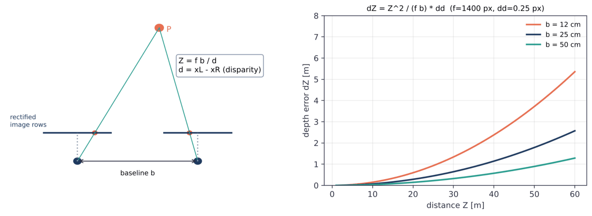
The quadratic error law dominates stereo system design. A 25 cm baseline with f = 1400 px and a quarter-pixel matching accuracy gives about ±0.3 m at 20 m but ±2.6 m at 60 m. Longer baselines help but make packaging behind the windscreen harder and increase occlusions and the near-range blind zone.
14.2Matching: from local costs to SGM
For each pixel and each candidate disparity, a matching cost compares the two images: SAD/SSD on intensities, normalised cross-correlation, or the census transform (a bit string recording which neighbours are darker than the centre, compared with Hamming distance), which is robust to gain differences between the two cameras and is the most common choice in hardware. Choosing the minimum cost per pixel independently ("winner takes all") is noisy in weak texture.
Semi-Global Matching (SGM, Hirschmüller 2005) is the classic compromise between noisy local methods and expensive global optimisation. It aggregates costs along 4, 8 or 16 straight paths across the image with a simple rule: staying at the same disparity is free, changing by one costs a small penalty \(P_1\) (slanted surfaces), and jumping further costs a large penalty \(P_2\) (object boundaries):
Summing the path costs and taking the minimum gives a dense, edge-preserving disparity map. SGM is regular, highly parallel and memory-predictable, which is why it is implemented in FPGAs and in the stereo engines of automotive SoCs. Post-processing adds sub-pixel interpolation (parabola fit), a left-right consistency check (match both ways and invalidate disagreeing pixels - occlusions), and speckle filtering.
14.3Calibration is everything
Stereo depends on the relative pose of the two cameras at a precision of hundredths of a pixel. A small vertical misalignment (relative pitch or roll) breaks the row assumption and the matcher fails; a small relative yaw adds a constant disparity offset, which becomes a large depth error at range because far objects have tiny disparities. Windscreen distortion, temperature and mechanical stress on the bracket change these parameters, so production stereo systems run continuous online rectification correction - for example tracking the vertical offset of matched features and estimating a yaw offset from the disparity of points that should be at infinity, or from the ground plane.
Where stereo is used
Front stereo cameras are used in production ADAS (for example Subaru's EyeSight system) to provide generic obstacle detection - anything that sticks out of the ground plane in the disparity map is an obstacle, whether or not a classifier knows its class. The stixel representation (vertical column segments standing on the road) compresses a disparity map into a compact obstacle description.
15Tracking and State Estimation
Per-frame measurements are noisy, sometimes missing and sometimes wrong. Tracking turns them into stable objects with positions, velocities and uncertainties - the format vehicle functions consume.
15.1Why tracking
A detector running at 30 fps produces a set of boxes per frame. Downstream functions need something different: a consistent identity per object over time, a velocity (which a single frame cannot measure), a prediction of where the object will be (for time to collision, path planning and to bridge missed detections), and a confidence that suppresses one-frame false positives. Tracking provides all four by combining a motion model with measurements in a probabilistic filter.
15.2The Kalman filter
The Kalman filter keeps a Gaussian belief about the state x (for example position and velocity) with covariance P, and alternates two steps. Predict moves the belief forward with a motion model F and inflates the uncertainty by the process noise Q (the world may not follow the model exactly). Update compares the prediction with a measurement z (through the measurement model H), and corrects the state by an amount proportional to the innovation z - Hx:
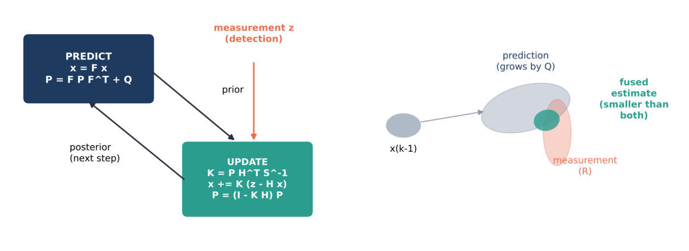
The Kalman gain K is the heart of it: it weighs the measurement against the prediction according to their uncertainties. If the sensor is precise (small R), K is large and the filter follows the measurements; if the model is trustworthy (small Q), K is small and the output is smooth. Tuning Q and R is therefore the main engineering lever: it trades latency against smoothness. Under its assumptions (linear models, Gaussian noise) the Kalman filter is the optimal estimator, and in practice it is remarkably robust when those assumptions are only approximately true.
Non-linear variants
| Filter | Idea | Typical automotive use |
|---|---|---|
| Extended KF (EKF) | Linearise motion/measurement models with Jacobians at the current estimate | Camera measurements (projection is non-linear), CTRV vehicle models, online calibration |
| Unscented KF (UKF) | Propagate a few deterministic sigma points through the non-linear function | Strong non-linearities, no Jacobians needed |
| Particle filter | Represent the belief with many weighted samples | Multi-modal problems: map localisation, lane hypotheses |
| IMM | Several motion models (constant velocity, turning, accelerating) run in parallel and mix by probability | Manoeuvring targets: vehicles that brake or turn suddenly |
Motion models in one line each
- CV / CA: constant velocity / constant acceleration in x and y - simple, good for pedestrians.
- CTRV / CTRA: constant turn rate and velocity (or acceleration) - respects that cars move along their heading and turn smoothly.
- Bicycle model: for the ego vehicle, uses steering angle and wheelbase.
15.3Data association
Before updating, the tracker must decide which measurement belongs to which track - in crowded scenes this is the hardest part. The standard steps:
- Gating: only consider measurements inside a track's validation region, measured with the Mahalanobis distance d2 = yTS-1y (innovation weighted by its covariance), compared to a chi-square threshold. Uncertain tracks have large gates, precise tracks small ones.
- Cost matrix: cost of assigning each measurement to each track (Mahalanobis distance, IoU overlap, appearance similarity).
- Assignment: the Hungarian algorithm finds the globally optimal one-to-one assignment (Global Nearest Neighbour). JPDA instead updates each track with a probability-weighted mix of nearby measurements, useful in clutter. MHT keeps multiple association hypotheses over several frames and decides later.
- Track management: unmatched measurements start tentative tracks, confirmed after M hits in N frames; unmatched tracks coast on prediction and are deleted after some misses. This logic is what removes single-frame false positives and bridges short occlusions.
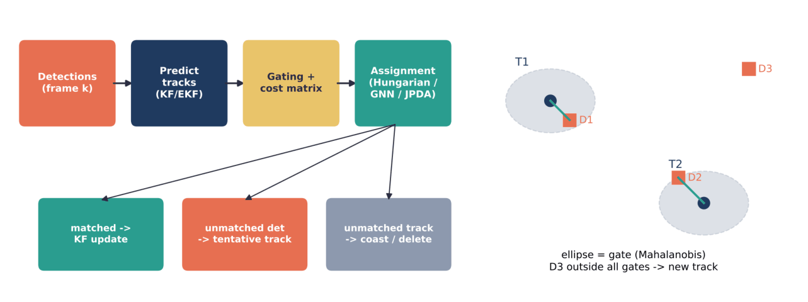
15.4Other kinds of tracking
Feature tracking (KLT, Chapter 11) follows image points, not objects. Template and correlation trackers follow an image patch by maximising normalised cross-correlation; correlation-filter trackers (MOSSE, KCF) do this efficiently in the Fourier domain and were the state of the art for single-object tracking before deep learning. Mean-shift tracks a colour histogram by climbing to the mode of the similarity. In automotive stacks, Kalman-based tracking of detections is by far the most common pattern - also for non-object quantities: lane model parameters, parking slot corners, the horizon, or calibration angles.
Tracking KPIs
- MOTA / HOTA: combined detection and association accuracy.
- ID switches: how often an object's identity changes - critical for functions that follow a lead vehicle.
- Latency of velocity estimates and time to confirmation of new objects - a direct trade-off with false-positive rate through Q, R and the M-of-N logic.
16Classic Detection on the Road
Before neural networks, lanes, parking slots, pedestrians and signs were detected with hand-crafted pipelines. Several are still in use, and all of them teach how image structure becomes a decision.
16.1Building blocks
- Convolution and filtering: Gaussian smoothing (noise), Sobel/Scharr derivatives (gradients), Laplacian. Separable kernels (a 2D Gaussian as two 1D passes) are a standard embedded optimisation.
- Canny edge detection: smooth, compute gradient magnitude and direction, thin edges by non-maximum suppression along the gradient, and link them with hysteresis (two thresholds: strong edges start a chain, weak edges continue it). Still the reference edge detector.
- Morphology: erosion, dilation, opening and closing on binary masks remove specks and fill gaps; connected components group pixels into blobs with area, bounding box and centroid.
- Integral images: one pass of cumulative sums lets you compute the sum over any rectangle with 4 look-ups
- the trick behind Viola-Jones, SURF and fast box filters.
- Template matching / NCC: slide a template and score similarity; normalised cross-correlation is invariant to gain and offset.
The operators in this list are explained in depth, with real road images, in Chapter 18.
16.2Hough transform and lane detection
The Hough transform finds lines by voting. A line is written as ρ = x cos θ + y sin θ. Each edge pixel votes for all (θ, ρ) of lines that pass through it - a sinusoid in parameter space. Pixels on the same line produce sinusoids that intersect in one cell, which collects many votes. Voting is naturally robust to gaps and outliers, and generalises to circles and other shapes.
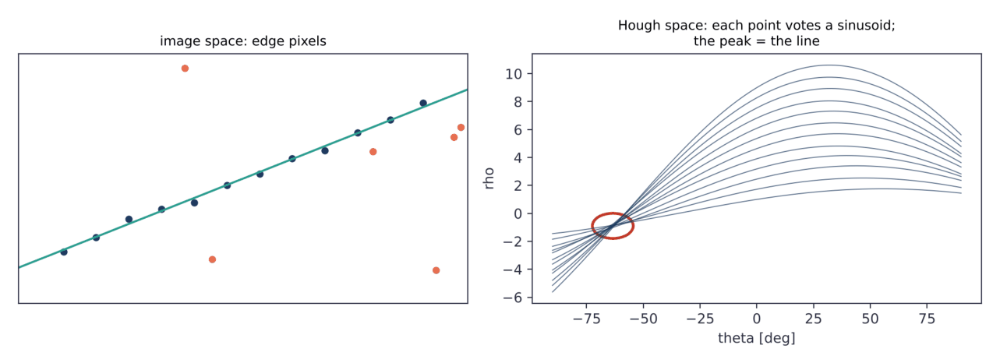
A classic lane detection pipeline, used in the first generations of lane departure warning:
- Restrict to a region of interest and optionally warp to a bird's-eye view (inverse perspective mapping), where lane markings become parallel with constant width.
- Extract marking candidates: dark-bright-dark patterns of the expected width along image rows, gradient pairs of opposite sign, or colour thresholds for yellow lines.
- Fit a lane model robustly: Hough or RANSAC for lines, then a polynomial or clothoid model (curvature changing linearly with distance - the shape road designers actually use).
- Track the model parameters (lateral offset, heading, curvature, curvature rate, lane width) with a Kalman filter; the prediction defines where to search in the next frame.
16.3Parking slot detection on the bird's-eye view
Classic slot detection works on the stitched top view, where slot markings appear with their true metric shape. Line segments are extracted (e.g. with the LSD line segment detector or Hough), paired into marking lines by width, and junctions (T, L, X shapes) are detected as slot corner candidates, often with templates or corner detectors. Hypotheses are then formed from geometric rules - entrance width 2.3-3 m, perpendicular, parallel or angled layout - and confirmed over several frames using vehicle odometry to transform earlier observations into the current frame. Free-slot decision combines markings with obstacle information from ultrasonic sensors or motion stereo.
16.4HOG + SVM and Viola-Jones
HOG (Histograms of Oriented Gradients, Dalal & Triggs 2005) describes a detection window (e.g. 64x128 pixels for a pedestrian) with gradient-orientation histograms in small cells, contrast-normalised over overlapping blocks - the same idea as the SIFT descriptor, applied densely. A linear SVM trained on positive and negative examples scores each window; the image is scanned at many positions and scales, and overlapping detections are merged by non-maximum suppression.
Viola-Jones (2001) made real-time detection possible on weak hardware: thousands of simple Haar-like features (differences of rectangle sums, computed in constant time with integral images), selected and weighted by AdaBoost, arranged in a cascade where cheap early stages reject most windows. Faces were the famous application; vehicles, signs and pedestrians followed in early ADAS products.
Why these were replaced - and what remains
Hand-crafted features cannot capture the variability of real road scenes (occlusion, pose, weather, lighting) the way learned features can, so CNNs now dominate detection and classification. What remains classic: the geometry around the detector (camera models, ground-plane distance, tracking), pre- and post-processing (pyramids, NMS), simple robust tasks on constrained inputs (e.g. targets at EOL, markers, some parking line extraction), and monitoring functions that need to be explainable.
17Embedded Implementation, Safety and Validation
An algorithm that works in Python on a PC is roughly 20% of a product. The rest is making it fit the SoC, the time budget, the safety case and the validation plan.
17.1Mapping algorithms to hardware
| Unit | Strengths | Classic CV workloads |
|---|---|---|
| Fixed-function accelerators (LDC/warp, scaler, pyramid, dense flow, stereo) | Deterministic, low power, high throughput | Undistortion and BEV remap, image pyramids, dense optical flow, SGM disparity |
| DSP / vector processor (VLIW, SIMD) | Fixed-point and float vector maths, predictable timing | Filters, FAST/Harris, KLT, feature descriptors, census, histograms |
| GPU | Massive parallelism, float | Dense per-pixel processing, BA on larger problems, visualisation (3D bowl view) |
| CPU (with SIMD, e.g. NEON) | Flexible control flow | RANSAC, PnP, small optimisations, tracking, state machines |
| NN accelerator | Convolutions | Not classic CV - but often consumes outputs of the remap/pyramid stages |
Things that bite on embedded targets
- Memory bandwidth, not FLOPs, is often the limit: every full-resolution image read or written costs DDR traffic. Tiling, line buffers, sparse LUTs and processing at the lowest sufficient pyramid level matter more than micro-optimising arithmetic.
- Numerical precision: geometry in float32 is usually fine if inputs are normalised (Hartley normalisation, centred coordinates, metres not millimetres). SVD and matrix inversion on badly scaled data lose precision silently. Fixed-point pixel pipelines need explicit range analysis.
- Determinism and timing: worst-case execution time matters more than average. Bound RANSAC iterations, feature counts and optimiser iterations; make the system degrade gracefully when the budget is hit.
- Timestamps and synchronisation: exposure-centre timestamps, consistent with the vehicle bus time base, for every frame - and rolling-shutter awareness where needed.
- Integration: camera parameters and calibration results are data with a lifecycle (EEPROM, NVM, diagnostic read/write, versioning), typically integrated into an AUTOSAR Classic or Adaptive environment.
17.2Safety: ISO 26262 and SOTIF
ISO 26262 addresses malfunctions of hardware and software; ISO 21448 (SOTIF) addresses the case where the system works as designed but the design is insufficient for a situation - for cameras, this is the dominant concern. Classic CV knowledge is central to the SOTIF argument because many triggering conditions are geometric or photometric and can be reasoned about explicitly:
- Low sun, glare, tunnel entry/exit (dynamic range, flare, AE response time).
- Rain drops, dirt, snow, fogging on the lens (blur, partial blockage).
- Repetitive patterns, low texture, reflections on wet roads (correspondence failures).
- Calibration drift, load changes, slopes and ramps (ground-plane assumption violated).
- Fast rotation (motion blur, rolling shutter), LED flicker.
Each triggering condition needs either a mitigation or a detection so the function can degrade safely. Many of these monitors are classic CV: blockage and soiling detection (local sharpness, gradient energy and temporal variance per image tile - a dirty region stays blurry and static while the car moves), calibration plausibility (vanishing point and horizon consistency, overlap consistency in SVM, RANSAC inlier ratios), image freeze detection (frame counters, checksums, temporal change), and cross-checks between neural network outputs and geometric expectations.
One sentence for a safety review
"For every geometric assumption our pipeline makes - flat ground, static scene, valid calibration, brightness constancy - we have a monitor that detects when it is violated, and a defined degraded behaviour when it is."
17.3Validation
Classic algorithms have the advantage that many of their outputs can be checked against physics. Typical validation assets: ground truth from RTK-GNSS/INS and LiDAR for ego-motion and depth; surveyed test tracks and calibration halls; re-simulation of recorded data in SIL/HIL with bit-exact reproducibility; Monte-Carlo perturbation of calibration parameters to measure sensitivity; and simulators (for example CARLA) that provide perfect geometry, controllable weather and exact ground truth for camera models, BEV and VO, with the caveat that synthetic images do not reproduce real ISP and optics artefacts.
Most common validation gap
Testing the algorithm with perfect calibration. Production systems never have it. Always include realistic calibration errors (from the EOL error budget and online calibration accuracy), time offsets and ISP variations in the validation matrix, and report KPIs as a function of them.
18Image Processing Fundamentals
Everything else in this handbook assumes that the pixels have already been cleaned, measured and reduced to something an algorithm can reason about. That work is done by a small family of old, simple operators: filters, edge detectors, thresholds, morphology, connected components, histograms and pyramids. They run in every camera ECU, inside the ISP, in the vision accelerators in front of the neural networks and in the classic detectors of Chapter 16, and they decide what the later stages can and cannot see.
The running example is a set of real highway frames (the public Udacity lane-finding test images, MIT licence): white and yellow lane markings on asphalt and concrete, a frame with hard tree shadows, a bird's-eye view made from one of them, and a night version of a frame simulated with a sensor noise model. Every number quoted below comes from running the operators in OpenCV on these images; the scripts are listed in Further reading. The signal-processing view of convolution and sampling is in Mathematics, Chapter 10; this chapter is about the operators themselves, what they do to real road images and where they run.
18.1Three kinds of operator, and why the kind decides the hardware
The most useful way to sort image operators is not by what they compute but by how much of the image they need to see before they can produce one output pixel. A point operator needs only the input pixel at the same position: a fixed threshold, a gamma curve, any look-up table. A local operator needs a small neighbourhood around it: every filter, gradient and morphological operation in this chapter. A global operator needs the whole image, or at least statistics of it: a histogram, Otsu's threshold, histogram equalisation, connected-component labelling.
This distinction matters because a camera delivers its image as a stream, row after row, over MIPI CSI-2 into the ISP. A point operator can be applied as the pixels fly past. A local operator with a k×k window has to remember the last k−1 rows, so hardware implements it with k−1 line buffers in on-chip SRAM and produces output with a delay of a few rows; a 5×5 filter on a 1920-pixel-wide 12-bit stream needs four lines, about 11 KB, and never touches DDR memory. A global operator cannot produce its first output until the last input pixel has arrived. Hardware solves that in one of two ways: it runs a second pass over the stored frame, or it computes the statistics on frame n and applies them to frame n+1. Auto-exposure and global tone mapping in the ISP work exactly this way, which is why they lag one frame behind a sudden change such as a tunnel exit.
Two more details decide whether two implementations of "the same" operator agree. The first is border handling: near the image edge part of the window falls outside the image, and the implementation must invent those pixels by replicating the edge pixel, reflecting the image or assuming a constant. OpenCV's default reflects without repeating the edge pixel (BORDER_REFLECT_101); an accelerator may replicate. The results differ only in a frame a few pixels wide, but that is enough to fail a bit-exact comparison between the PC reference and the target. The second is bit depth: derivatives are signed and grow beyond the input range (a 3×3 Sobel on 8-bit input reaches ±1020), so they need 16-bit outputs; a filter in fixed point needs a defined rounding and saturation rule.
| Operator | Kind | Typical place in a production camera system |
|---|---|---|
| Gain, gamma, look-up tables, fixed threshold | Point | ISP pipeline stages; any core as a LUT |
| Gaussian, box, separable filters, Sobel | Local | ISP (noise reduction, sharpening), vision DSP or vector accelerator, GPU |
| Median, bilateral | Local, non-linear | ISP defect-pixel correction and noise filter; hardware noise-filter blocks |
| Morphology (erode, dilate, top-hat) | Local, non-linear | Vision DSP or vector accelerator, CPU with SIMD |
| Pyramid levels, scaling | Local + resampling | Fixed-function multi-scaler next to the ISP |
| Histogram, Otsu, equalisation | Global | ISP statistics block (for 3A), DSP, CPU |
| Connected components, Canny hysteresis | Global, data-dependent | CPU or DSP; awkward for fixed-function hardware |
Automotive SoCs put these operators into dedicated blocks because they are cheap in silicon and expensive in DDR bandwidth. Examples: TI's TDA4 family has a vision pre-processing accelerator with a lens-distortion engine, a multi-scaler for pyramids and a bilateral noise filter next to its C7x DSP; NVIDIA's Orin has a video image compositor for scaling and format conversion and a programmable vision accelerator, both reachable through the VPI library; licensable vision DSPs from Cadence and CEVA sit in several other SoCs. The Khronos OpenVX standard, which several of these vendors implement, defines a kernel list that reads like the table of contents of this chapter: box, Gaussian and median 3×3, Sobel, Canny, threshold, erode, dilate, histogram, equalisation, Gaussian and Laplacian pyramids, integral image.
Single-thread OpenCV on a 2.3 GHz x86 server core, one 1280×720 8-bit frame: box 5×5 0.30 ms, Gaussian 5×5 0.69 ms, median 5×5 1.0 ms, Sobel x and y 0.63 ms, Otsu 0.40 ms, adaptive threshold 51×51 1.0 ms, top-hat 25×1 0.51 ms, pyramid level 0.14 ms, CLAHE 2.9 ms, connected components with statistics 4.1 ms, Canny 5.0 ms, bilateral d = 9 11.5 ms. The ranking carries over to embedded cores; the absolute values do not. Each full read or write of such a frame is 0.92 MB, about 28 MB/s at 30 fps, so a chain of six separate passes that each read and write the frame costs some 330 MB/s per camera before any arithmetic.
18.2Linear filters: convolution, kernels and scale
Why it exists. Every image carries noise, and every derivative amplifies it: the difference between two neighbouring pixels has twice the noise variance of either pixel and only a fraction of the signal. Before an algorithm looks for edges, corners or flow, it therefore smooths the image. Smoothing also selects a scale: it removes detail smaller than the filter and keeps structure larger than it, which is how a detector is tuned to lane markings rather than to asphalt texture.
How it works. A linear filter replaces each pixel by a weighted sum of its neighbours. The weights form a small matrix, the kernel, which slides over the image (Figure 18.1). Because the operation is linear and the same everywhere, the kernel is a complete description of the filter: it is literally the output for a single bright pixel, the impulse response. A kernel whose weights sum to 1 keeps the brightness of flat areas, which is what smoothing kernels do. A kernel whose weights sum to 0 gives zero on flat areas and responds only to change, which is what derivative and edge kernels do.
The box filter averages a square window. It is the cheapest smoother (with an integral image, Section 16.1, its cost per pixel does not depend on the window size), but its sharp-edged window has a poor frequency response: it lets some fine detail through in alternating sign and turns a bright point into a visible square. The Gaussian weights neighbours by exp(−r²/2σ²). It is the only kernel that is both rotationally symmetric and separable, it has no ringing, and repeated smoothing with Gaussians gives another Gaussian, which is why scale-space theory is built on it. A Gaussian of standard deviation σ needs a window of about 6σ+1 pixels to hold 99.7 % of its weight. In fixed-point hardware it is usually approximated by binomial weights (1 4 6 4 1)/16, whose sum is a power of two, so normalising is a shift instead of a division.
Separability is the most important cost trick in the chapter. A kernel that is the outer product of a column and a row can be applied as a vertical pass followed by a horizontal pass. A k×k window then costs 2k multiplications per pixel instead of k²: 10 instead of 25 for 5×5, 62 instead of 961 for 31×31. OpenCV measures the effect: a 5×5 Gaussian on a 1280×720 frame takes 0.69 ms, a 31×31 one 3.7 ms, about five times more for 38 times the window area. A generic 5×5 kernel through filter2D, which cannot exploit separability, takes 1.8 ms.
import cv2, numpy as np
g = cv2.imread("frame.png", cv2.IMREAD_GRAYSCALE)
smooth = cv2.GaussianBlur(g, (5, 5), sigmaX=1.2) # separable internally
k1 = cv2.getGaussianKernel(5, 1.2) # 5x1 column
same = cv2.sepFilter2D(g, -1, k1, k1) # explicit column + row pass
box = cv2.boxFilter(g, -1, (5, 5)) # cost independent of size
custom = cv2.filter2D(g, cv2.CV_16S, np.array([[-1, 0, 1]]), # NB: correlation, not convolution
borderType=cv2.BORDER_REPLICATE)Choosing the scale is a trade-off that Figure 18.2 lets you feel. It shows the brightness profile across a double lane marking, two 5-pixel stripes separated by a small gap, as a camera row would see it at some distance. Smoothing reduces the noise, so the derivative used to find the marking edges becomes more reliable: with noise of 10 grey levels, the signal-to-noise ratio of the edge response rises from 7 without smoothing to 14 at σ = 2 pixels. Beyond that it stops improving, because the filter is now wider than the stripe and averages the stripe itself away. At the same time the two stripes blur into each other: with a 4-pixel gap they are still separate at σ = 3 but merge into one blob at σ = 4, and the outer edge is found 1.3 pixels away from its true position because the neighbouring stripe pulls the smoothed profile. The best scale is the one that matches the size of the structure you are looking for, which is the idea behind the matched filter and behind every multi-scale detector.
Most libraries, OpenCV's filter2D included, compute correlation, not convolution: they do not flip the kernel. For symmetric smoothing kernels the two are identical; for derivative kernels the sign of the result flips. Port a filter from MATLAB's conv2 to OpenCV, or from a paper to an accelerator, and a dark-to-bright edge silently becomes bright-to-dark. Check every asymmetric kernel with a synthetic step image.
Three passes of a box filter approximate a Gaussian closely (the central limit theorem at work), and each pass costs a constant four additions per pixel with a running sum. That is how some embedded pipelines get a large-σ blur, for example for an adaptive threshold or a background estimate, for almost nothing.
"A linear filter is completely described by its kernel. Smoothing kernels sum to one, derivative kernels sum to zero. We use separable Gaussians because they cost 2k instead of k² operations and have no ringing, and we choose σ to match the size of the structure we want: big enough to beat the noise, small enough not to merge two lane markings."
18.3Non-linear filters: median and bilateral
Why they exist. Linear smoothing has two weaknesses that matter on a car. It treats an outlier like any other pixel, so a hot or dead pixel, a raindrop glint or a bit error is not removed but spread into a blob the size of the kernel. And it blurs edges as much as it blurs noise, which moves edge positions and hurts every geometric measurement. Non-linear filters give up the simple kernel description to avoid both.
The median filter replaces each pixel by the median of its window. An outlier is simply sorted to the end of the list and never chosen, so isolated impulses disappear completely, as long as fewer than half of the pixels in the window are corrupted. A clean step edge survives too, because on each side of the edge the majority of the window lies on that side. The price is that the median removes any structure narrower than half the window: a 5×5 median erases a 2-pixel-wide line, which can be a distant lane marking. It also rounds corners. Mathematically the median is the estimate that minimises the sum of absolute deviations, the same L1 idea that makes robust loss functions robust (Section 9.3).
The bilateral filter keeps the Gaussian weighting in space and multiplies it by a second Gaussian in intensity: a neighbour contributes only if it is both close and similar in brightness. Across an edge the neighbours on the other side are dissimilar and get almost no weight, so the edge stays sharp while flat regions are smoothed. That makes it the standard edge-preserving noise filter, and hardware noise-filter blocks in vision pre-processors are typically bilateral. But it has a blind spot that Figure 18.3 shows: an impulse is very dissimilar from all its neighbours, so the bilateral filter treats it as an edge and keeps it. Of the 582 corrupted pixels in the test crop, 308 survive the bilateral filter, while the median leaves 3.
This is why the order of operations in an ISP is not arbitrary. Defect-pixel correction, a median-like rank filter that compares each pixel with its same-colour neighbours, runs first on the raw data; the edge-preserving noise filter runs after it, on data that no longer contains impulses (see ISP engineering 3.5 and 5.2 for how production noise filters are driven by the sensor noise model). Swapping the two leaves bright specks that later stages detect as corners or as tiny objects.
Cost differs widely. A 3×3 median can be computed with a fixed network of 19 compare-and-swap operations, which vectorises perfectly; larger medians use running histograms whose cost per pixel is nearly independent of the window. The bilateral filter computes a different weight for every neighbour of every pixel, which is why it is ten times slower than a median on a CPU (11.5 ms against 1.0 ms above) and why it is either done in dedicated hardware or replaced by approximations such as the guided filter, which reaches a similar edge-preserving effect in linear time.
med = cv2.medianBlur(g, 5) # impulses, keeps steps, kills lines narrower than 3 px
bil = cv2.bilateralFilter(g, d=9, sigmaColor=40, sigmaSpace=3)
# sigmaColor is in grey levels: noise below it is smoothed, steps above it are keptA median filter on a perspective image removes thin structure where it is thinnest: far away. A 5×5 median that looks harmless on near markings erases the marking at 60 m, where it is two pixels wide. Size non-linear filters for the smallest structure that must survive, or apply them on a bird's-eye view where the width is constant.
18.4Gradients and edges: from Sobel to Canny
Why it exists. Most of the information in a road image sits where brightness changes: the borders of lane markings, kerbs, vehicle outlines, the corners of a calibration pattern. The image gradient, the vector of horizontal and vertical brightness change, is the basic measurement behind all of them. Its magnitude says how strong the change is, its direction says which way it points. Harris corners (Section 7.2), Lucas-Kanade flow (Section 11.2), HOG descriptors (Section 16.4) and the Hough transform (Section 16.2) are all built on it.
How it works. The Sobel operator estimates the horizontal derivative with the kernel of Figure 18.1: a central difference [−1 0 1] along the row, multiplied by a smoothing column [1 2 1]. The vertical derivative is the same kernel transposed. The smoothing part is not decoration; without it the derivative would be dominated by noise. Scharr uses weights 3, 10, 3 instead of 1, 2, 1 and gets the gradient direction noticeably more accurate for diagonal edges, which matters when the direction is used, as in HOG or orientation-dependent lane filters. From the two derivatives come the magnitude, √(gx² + gy²) or the cheaper |gx| + |gy|, and the direction atan2(gy, gx).
A gradient magnitude image is not yet an edge map: it is thick, because a blurred edge has a large gradient over several pixels, and it has no decision in it. John Canny formulated in 1986 what a good edge detector should do (find real edges, place them accurately, and mark each edge only once) and derived the procedure that is still the reference. Step through it in Figure 18.4.
The image is smoothed with a Gaussian (here 5×5, σ 1.4). σ sets the scale of the edges that will be found: larger σ finds fewer, longer, smoother edges and loses fine ones.
Sobel derivatives give magnitude and direction for every pixel. The magnitude is near zero on the road surface (median 4) and very large on the marking borders (99th percentile 244). The response is several pixels wide.
Each pixel is compared with its two neighbours along the gradient direction (rounded to 0°, 45°, 90° or 135°) and kept only if it is the largest. This thins every edge to a single pixel. Almost every pixel of the textured road survives as a tiny local maximum (37 225 in this crop), which is why a threshold is still needed.
Two thresholds split the thin maxima into strong (at least 150: 1 252 pixels), weak (50 to 149: 1 602 pixels) and discarded. A single threshold would have to choose between broken edges (high) and road texture (low).
Strong pixels are edges. A weak pixel becomes an edge only if it is connected, through other weak pixels, to a strong one. Edges are followed along their length into regions of lower contrast without accepting isolated texture: 2 047 edge pixels remain, the marking outlines and the vehicles, almost no asphalt.
The thresholds are the parameter everyone tunes. Canny recommended a high-to-low ratio of 2:1 to 3:1. Their absolute values depend on the image contrast and on the gradient operator and its normalisation (OpenCV applies them to the unnormalised Sobel magnitude). On the crop above, 20/60 produces 3 208 edge pixels, most of them road texture, and 100/300 produces 1 055, with the far, low-contrast marking outlines broken. Production code rarely uses fixed values; it derives them from statistics of the gradient magnitude in the region of interest, or it avoids Canny altogether.
It often does avoid it, for a reason that has nothing to do with quality. Steps 1 to 4 are local and stream perfectly through line buffers. Hysteresis is a connectivity search whose cost depends on the image content: edge chains can wander anywhere. That makes it slow on SIMD hardware, unpredictable in timing and hard to put into a fixed-function block. Lane detectors therefore commonly use a specialised local test instead: a marking is a bright bar of known width, so its row profile shows a rising edge followed, one marking width later, by a falling edge of similar strength. Searching for such edge pairs of opposite polarity, with a width that depends on the image row, rejects shadows, cracks and tar seams that a generic edge detector reports.
gx = cv2.Sobel(g, cv2.CV_16S, 1, 0, ksize=3) # signed 16-bit: 8-bit input gives up to +-1020
gy = cv2.Sobel(g, cv2.CV_16S, 0, 1, ksize=3)
mag = cv2.magnitude(gx.astype(np.float32), gy.astype(np.float32))
edges = cv2.Canny(cv2.GaussianBlur(g, (5, 5), 1.4), 50, 150, L2gradient=True)The gradient is the bridge between photometry and geometry. Calibration corner refinement, flow, stereo matching costs and line fitting all consume gradients, so anything that distorts them (sharpening halos, demosaicing artefacts, aggressive noise reduction) shows up later as a geometric error that nobody traces back to the ISP. That is the argument for a separate machine-vision output of the ISP (Section 3.2).
"Canny is smoothing, gradient, non-maximum suppression and hysteresis. The first three are local and cheap; hysteresis is a connectivity search, and that is the part that is hard to put on an accelerator and hard to bound in time. For lanes we use an edge-pair test with a row-dependent width instead, because a marking is a bright bar of known width, not just any edge."
18.5Thresholding: global, Otsu and adaptive
Why it exists. Sooner or later a pipeline has to turn measurements into decisions: is this pixel paint or road, object or background? A threshold does that in one comparison per pixel, and the binary mask it produces is the input of morphology and connected components. The difficulty is entirely in choosing the threshold, because the brightness of paint, asphalt and shadow changes with exposure, sun angle and road surface.
A fixed global threshold works only under controlled light, such as a calibration target in an end-of-line station. Nobuyuki Otsu's method (1979) chooses a global threshold automatically from the histogram. For every candidate T it splits the pixels into a dark class and a bright class and computes the between-class variance σ²B(T) = ω₀ω₁(μ₀ − μ₁)², where ω are the class fractions and μ the class means. The T that maximises it is the one that makes the two classes most separated; equivalently it minimises the variance within each class. The computation needs only the 256-bin histogram and one pass over it, so the cost is the histogram itself.
Otsu's method assumes that the histogram is bimodal and that the two modes are the two classes you care about. Figure 18.5 shows how that fails on a road. Lane paint covers only a few percent of the pixels and makes no visible hump of its own. The two humps that dominate are shadow (mean 48) and sunlit concrete (mean 166), and the optimal split between them is T = 107. The resulting mask in Figure 18.6 marks 54 % of the road as "bright": it is a shadow map, not a marking map.
An adaptive threshold compares each pixel not with one number but with the mean of its own neighbourhood: a pixel is foreground if it is brighter than its local mean plus a margin C. The window must be larger than the structure (here 51×51 pixels against markings 5 to 20 pixels wide), and the local mean is computed with a box filter in constant time per pixel. In shadow the local mean is low, in sunlight it is high, so a marking stands out in both. With C = 25 grey levels, 12 % of the road half remains: the markings, car bodies and some bright edges of the concrete patch. The local variants of Niblack and Sauvola also scale the margin with the local standard deviation, which helps in low-contrast regions.
The deeper lesson is to threshold a feature that already contains the distinction you want, not raw brightness. A marking is narrower and brighter than its surroundings, so a top-hat response (Section 18.6) or an edge-pair response (Section 18.4) separates paint from road far better than intensity does, and an ordinary Otsu threshold on the top-hat response then works. Yellow paint differs from road mainly in colour saturation, so a threshold on a saturation or chroma channel finds it where the grey image cannot. And when one threshold cannot decide, two can: the hysteresis idea of Canny applies to any mask.
T, otsu = cv2.threshold(g, 0, 255, cv2.THRESH_BINARY + cv2.THRESH_OTSU) # T returned
ada = cv2.adaptiveThreshold(g, 255, cv2.ADAPTIVE_THRESH_MEAN_C, cv2.THRESH_BINARY,
blockSize=51, C=-25) # foreground if g > local mean + 25Otsu always returns a threshold, even for an image with one class. On a frame of plain asphalt with no markings it will split the asphalt texture in half and report thousands of "marking" pixels. Check the separability (the maximum of σ²B relative to the total variance) before trusting the result, and treat a low value as "nothing here".
18.6Morphology: operators for shape
Why it exists. A thresholded mask is never clean: there are isolated specks from noise, small holes inside objects, markings broken by wear, and two objects touching through a thin bridge. Morphology cleans masks and measures shape using one idea: probe the image with a small shape, the structuring element, and ask where it fits.
How it works. Erosion keeps a pixel only if the structuring element, centred on it, lies entirely inside the foreground; for a grey image this is the minimum over the element. Objects shrink, and anything smaller than the element disappears. Dilation is the opposite, the maximum over the element: objects grow and gaps narrower than the element close. Neither is useful alone because both change object size. Their combinations are. An opening (erosion, then dilation) removes everything the element does not fit into, specks and thin bridges, and restores the remaining objects to their original size. A closing (dilation, then erosion) fills holes and gaps smaller than the element and also restores size. Figure 18.7 shows the four operations on a tiny mask.
The same operators work on grey images, and there they become a size-selective filter. An opening of a grey image with an element of width w removes every bright structure narrower than w and leaves the slowly varying background. Subtracting that from the image, the white top-hat, keeps exactly the bright structures narrower than w: lane markings, but not the bright concrete patch or the sunlit lane, which are wider. The black top-hat does the same for dark structures such as tar seams. It is one of the oldest lane-marking features, and it is size-tuned, not brightness-tuned, so a shadow across the road changes it very little.
The size tuning needs the marking width in pixels to be roughly constant, and in a perspective image it is not: the width shrinks from tens of pixels near the car to one or two pixels at the horizon. There are two answers. One is a structuring element whose width depends on the image row, computed from the camera model. The other is to work on the bird's-eye view (Section 6.2 and Camera geometry 7.4), where every marking has its true metric width. Figure 18.8 does the latter on a real frame: the marking is about 6 pixels wide in the 320×480 top view, so a horizontal 25×1 element removes it from the opening, the top-hat isolates it, and Otsu's threshold on the top-hat response (T = 53) followed by a 3×3 opening gives a clean mask.
Morphology is cheap. A rectangular element is separable into a row and a column pass, and the van Herk/Gil-Werman algorithm computes the running minimum or maximum over a window of any length with about three comparisons per pixel, independent of the length. The 25×1 top-hat above takes 0.5 ms on a 1280×720 frame. Non-rectangular elements (discs, lines at an angle) are more expensive and are usually approximated by combinations of line elements.
se = cv2.getStructuringElement(cv2.MORPH_RECT, (25, 1)) # wider than a marking (about 6 px here)
tophat = cv2.morphologyEx(bev, cv2.MORPH_TOPHAT, se) # bev - opening(bev)
T, mask = cv2.threshold(tophat, 0, 255, cv2.THRESH_BINARY + cv2.THRESH_OTSU)
mask = cv2.morphologyEx(mask, cv2.MORPH_OPEN, np.ones((3, 3), np.uint8)) # remove specksMorphology is also how neural-network outputs are cleaned in production. A segmentation network's free-space or lane mask goes through openings and closings, a hole-filling step and connected components before it becomes a polygon or a polyline for planning. The operators of this chapter did not disappear when networks arrived; they moved behind them.
18.7Connected components: from pixels to objects
Why it exists. A mask says which pixels are foreground, not which pixels belong together. Counting markings, measuring a parking line, rejecting a blob that is too small or too round, or handing a list of candidate objects to a tracker all need the pixels grouped into connected components, each with a label and a set of measurements.
Two pixels are connected if a path of foreground pixels joins them. Which neighbours count is a choice: 4-connectivity uses only the pixels above, below, left and right, 8-connectivity adds the diagonals. The choice changes results: a thin diagonal line is one object under 8-connectivity and a chain of single pixels under 4-connectivity. Digital topology adds a subtlety: if foreground and background use the same rule, a closed curve can fail to separate inside from outside, so the consistent convention is 8-connectivity for one and 4 for the other.
The classic algorithm, due to Rosenfeld and Pfaltz (1966), makes two passes (Figure 18.9). In the first, row by row, each foreground pixel takes the smallest label among its already visited neighbours, or a new label if it has none. Where two different labels meet, as at the bottom of a U shape, the algorithm records that they are the same object in a union-find structure. The second pass replaces every provisional label by the root of its set. Area, bounding box, centroid and the sums needed for second moments are accumulated along the way; from the second moments follow the orientation and elongation of each component, which is often the best test of whether a blob is a marking.
Provisional labels and the equivalences recorded where labels meet. The U gets two labels because its right arm starts before the algorithm reaches the bottom row that connects it.
Each label is replaced by the root of its equivalence set. The U is one object; the right-hand pair stays two objects under 4-connectivity because its parts touch only diagonally.
On the bird's-eye view of Figure 18.8 the mask contains seven components under 8-connectivity. A filter on area (at least 60 pixels) and shape (height at least 2.5 times the width, since markings run along the road) keeps five: the solid left line, 472 pixels long and 15 wide at its widest, and four dashes of the right line, the longest 73 pixels with an area of 467. Those five components, each reduced to a centroid and an orientation, are what a line fit or a lane tracker receives (Sections 16.2 and 15.3); parking-slot detection on the surround-view top view does the same with slot lines (Section 16.3).
On embedded targets the interesting problem is not speed but bounds. The number of provisional labels depends on the image: a noisy mask with a checkerboard texture can need one label for every other pixel, and the equivalence table must be allocated for that worst case or the function must detect overflow and degrade gracefully. Hardware and DSP implementations therefore label run-length-encoded rows instead of pixels, which reduces both memory and work, and cap the number of components they report. Measured with OpenCV, labelling with statistics took 4.1 ms per 1280×720 mask, among the slowest operators in the chapter.
n, labels, stats, centroids = cv2.connectedComponentsWithStats(mask, connectivity=8)
for i in range(1, n): # label 0 is the background
x, y, w, h, area = stats[i]
if area >= 60 and h >= 2.5 * w: # markings are long and thin in the top view
candidates.append((centroids[i], (x, y, w, h)))Component statistics are only as good as the mask. Two markings that touch through one noisy pixel become one long component, and a worn dash broken by a crack becomes two short ones that fail the length test. Clean the mask with an opening and a closing sized from the geometry first, and design the downstream fit to tolerate both errors.
18.8Histograms, equalisation and CLAHE
Why it exists. The histogram, the count of pixels at each grey level, is the cheapest complete summary of an image's exposure and contrast. The ISP's statistics block computes histograms for auto-exposure; monitoring functions use them to detect a blocked or fogged lens, which shows up as a histogram squeezed into a few levels; and contrast enhancement uses them to stretch a dark or flat image so that structure becomes visible. The night case makes the trade-offs concrete: a pedestrian at the edge of the headlamp beam is a few grey levels above a dark background.
The simplest enhancement is a fixed point curve such as a gamma of 0.45, which lifts dark values strongly and bright values little. Histogram equalisation adapts the curve to the image: it maps each grey level through the cumulative histogram (the CDF), scaled to the output range, so that the output histogram becomes as flat as possible. Dense parts of the histogram are spread apart and sparse parts compressed. The slope of that mapping is proportional to the histogram height, and that is its weakness: a large dark, flat region, such as night asphalt, is the densest part of the histogram, so it gets the steepest slope, and its noise is amplified the most.
CLAHE (contrast-limited adaptive histogram equalisation, Zuiderveld 1994) fixes both problems of the global version. It divides the image into tiles (8×8 is common) and equalises each tile with its own histogram, so a dark region and a lit region get different curves. Before computing each mapping it clips the histogram at a limit and redistributes the excess evenly; since the slope of the mapping follows the histogram height, clipping bounds the slope and therefore the noise gain. Finally it blends the mappings of the four nearest tiles bilinearly, so no tile borders are visible.
Figure 18.10 shows the numbers. The dark frame has a mean of 15 and uses only 55 grey levels. Gamma raises the mean to 67 and the asphalt noise from 5.8 to 16.6 grey levels. Global equalisation raises the mean to 125 and the noise to 70.6, twelve times the input, because the dark asphalt dominates the histogram. CLAHE with clip limit 2 lifts the dark regions, keeps the lit ones, and raises the noise only to 13.3. It also reports 128 distinct output levels, but that is an effect of blending four tile curves, not new information.
No curve can add information. The signal-to-noise ratio of the dark frame was fixed when the photons were counted; every enhancement maps the same 55 levels to new values, and the gaps in the gamma and equalised histograms are the visible proof. The real remedies for night are upstream: longer exposure within the motion-blur budget, larger pixels, HDR capture and good local tone mapping in the ISP (see ISP engineering 6.2). Enhancement curves are for the display and for operators that need a normalised input, such as thresholding or template matching.
hist = cv2.calcHist([g], [0], None, [256], [0, 256])
he = cv2.equalizeHist(g) # global: CDF as the mapping
clahe = cv2.createCLAHE(clipLimit=2.0, tileGridSize=(8, 8)) # per tile, slope bounded by the clip
cl = clahe.apply(g)Adding CLAHE or equalisation in front of a trained detector changes its input distribution from frame to frame, because the curve depends on the image content. A network trained on unenhanced ISP output can lose detections it previously had. Either train with the same enhancement, or leave the curve to the ISP's tone mapping, which is designed to be temporally stable.
The CDF mapping of histogram equalisation is the same trick used to sample random numbers from any distribution, run backwards. Applying a variable's own CDF to it gives a uniformly distributed result, which is exactly what "flat histogram" means.
18.9Image pyramids and scale
Why it exists. Objects appear at every size: a car fills half the frame at 5 m and a few pixels at 150 m; a lane marking moves 40 pixels between frames near the car and one pixel near the horizon. Algorithms with a fixed window, such as a template, a Lucas-Kanade patch or a HOG detection window, can only handle one size. Rather than build detectors for every size, classic vision builds the image at every size: a pyramid.
How it works. Each level of a Gaussian pyramid is made from the one below by smoothing (with the 5-tap binomial kernel of Figure 18.1) and then dropping every second row and column. The smoothing step is not optional. Halving the resolution halves the highest frequency the image can represent, and any detail finer than that does not disappear when pixels are dropped; it folds back as a false, coarser pattern. Figure 18.11 shows this aliasing on a zone plate, a synthetic test pattern whose frequency grows outwards: plain decimation by four creates rings that are not in the original, while two pyramid steps turn the unrepresentable fine rings into a neutral grey. On a road image the same effect makes distant dashed markings and guard-rail posts flicker and crawl between frames. Because each level has a quarter of the pixels of the one below, a full pyramid costs only 1 + 1/4 + 1/16 + … ≈ 4/3 of the base image in memory and computation.
A Laplacian pyramid stores, for each level, the difference between that level and the upsampled next coarser level: a band-pass image that contains only the detail of one octave of scale, plus the coarsest Gaussian level at the top. Adding the levels back together reconstructs the original exactly (in floating point the round trip on the test frame is exact to 2×10⁻⁶ grey levels). That makes it the tool for working on detail one scale at a time: multi-band blending of camera overlaps in surround view (compare the seam blending in GLES surround view 10.6), detail enhancement, and compression.
Pyramids appear throughout this handbook. Pyramidal Lucas-Kanade (Section 11.2) estimates large motions at a coarse level, where they are small, and refines them level by level. SIFT's difference-of-Gaussian scale space (Section 7.4) is a finely sampled pyramid; ORB builds 8 levels with a factor of 1.2 instead of 2 so that features match across smaller scale changes. Sliding-window detectors scan every level with one window size. The feature pyramid networks of modern detectors (Landmark papers 9.3) are the learned descendant of the same idea. In hardware, multi-scaler engines next to the ISP produce several resolutions from one read of the frame, which is why pyramids are almost free on automotive SoCs and why networks are often fed from them.
levels = [g]
for _ in range(4):
levels.append(cv2.pyrDown(levels[-1])) # 5x5 binomial blur, then drop every 2nd row/column
lap = [levels[i].astype(np.float32) - cv2.pyrUp(levels[i + 1], dstsize=levels[i].shape[::-1])
for i in range(4)] + [levels[4].astype(np.float32)]cv2.resize with linear interpolation does not blur before downscaling; it samples. Shrinking a frame by four with it aliases exactly like the decimation in Figure 18.11. Use INTER_AREA, pyrDown, or a hardware scaler with a proper filter whenever the factor is larger than about 1.5, including when preparing network inputs.
18.10Putting it together: where these operators still run
Assembled, the operators of this chapter make a complete classic marking extractor, the front end that lane and parking functions used before networks and that low-cost systems still use. The ISP delivers a luma image. A remap engine produces the bird's-eye view with the calibrated homography. A top-hat or an edge-pair filter turns markings into a strong response, a threshold turns the response into a mask, an opening and a closing clean the mask, connected components turn it into candidates with position, length and orientation, a robust line or curve fit (Sections 9.1 and 16.2) turns the candidates into lane boundaries, and a tracker (Chapter 15) smooths them over time. On the frame of Figure 18.8 the steps after the remap took about 5 ms single-threaded on a server core, most of it connected-component labelling.
Most production lane and object detection today is done by networks, but the operators did not disappear; they moved to the edges of the network. In front of it: scaling and pyramids from the multi-scaler, colour conversion, normalisation, remapping. Behind it: thresholds on score maps, morphology and connected components on segmentation masks, non-maximum suppression (the same idea as in Canny, applied to boxes). Beside it, as independent monitors with a safety argument of their own: blockage and blur detection from histograms and the variance of the Laplacian, plausibility checks of network lanes against simple edge evidence. And inside the ISP, every one of them in hardware. Knowing what each one does to an image is how one reads a failing perception log: a missed pedestrian at night is often an exposure and noise problem, a flickering far lane often an aliasing problem, a jumping lane edge often a sharpening halo.
The most common bug is not in any single operator but in the mismatch between the PC reference and the target: different border modes, rounding, kernel normalisation, interpolation, or correlation versus convolution. Define each operator by a reference implementation and a bit-exact or tolerance-based test on real frames, including the image border, before porting it.
"Classic image processing is now mostly the plumbing around the networks: pyramids and scaling in front, thresholds, morphology and connected components behind, and simple monitors beside them. Those operators are cheap only when they stream through line buffers in hardware; the ones that need the whole image, like labelling and hysteresis, are the ones we budget carefully on the CPU or DSP."
19Cheat Sheet for Presentations and Discussions
Short explanations, numbers and answers you can use directly in a meeting.
19.1Every algorithm in two sentences
| Algorithm | What it does | How, in one breath |
|---|---|---|
| Pinhole + distortion model | Maps 3D points to pixels and back | Divide by depth, apply lens warp, scale by focal length and shift by principal point. |
| Zhang calibration | Finds intrinsics from a planar pattern | Homographies per image give linear constraints on K, then everything is refined by minimising reprojection error. |
| PnP | Camera pose from known 3D points | Three points give up to four poses, RANSAC removes outliers, LM polishes the result. |
| SVM joint calibration | Consistent poses of 4 cameras | Targets in overlap zones tie neighbouring cameras together in one optimisation anchored to the vehicle frame. |
| Online calibration | Keeps extrinsics correct while driving | Road texture motion, lane geometry and vanishing points measure pitch/roll/yaw/height under gated conditions, fused over time. |
| Harris / Shi-Tomasi | Finds corners | Gradients in a window form a 2x2 matrix; two large eigenvalues mean a corner. |
| FAST | Very fast corners | A contiguous arc of brighter or darker pixels on a 16-pixel circle. |
| SIFT | Scale/rotation-invariant features | Blob extrema in a DoG scale space, oriented to the dominant gradient, described by 4x4x8 gradient histograms. |
| ORB | Fast invariant binary features | FAST on a pyramid, oriented by intensity centroid, described by 256 intensity comparisons, matched by Hamming distance. |
| Homography | Plane-to-image or rotation-only mapping | 3x3 matrix from 4+ points via normalised DLT. |
| Essential matrix | Relative pose between two views | 5-point solver in RANSAC, decompose into R and t direction, cheirality picks the solution. |
| Triangulation | 3D point from two rays | Intersect rays in the least-squares sense; accuracy depends on parallax. |
| RANSAC | Fit models with outliers | Fit to random minimal samples, keep the one with most agreement. |
| Levenberg-Marquardt | Non-linear least squares | Gauss-Newton steps with adaptive damping toward gradient descent. |
| Lucas-Kanade / KLT | Sparse optical flow / tracking | Assume a window moves rigidly, solve a 2x2 system, iterate over a pyramid. |
| Visual odometry | Ego-motion from images | Track features, estimate motion by PnP, refine with windowed bundle adjustment, fix scale with camera height or wheels. |
| SLAM | Odometry plus map and loop closure | Recognise revisited places and spread the accumulated drift over a pose graph. |
| Bundle adjustment | Joint optimal poses and 3D points | Minimise all reprojection errors, exploit sparsity with the Schur complement. |
| Stereo SGM | Dense depth from two cameras | Census costs aggregated along many paths with small/large disparity-jump penalties; Z = fb/d. |
| Kalman filter | Optimal fusion of model and measurements | Predict with the motion model, correct with the measurement weighted by relative uncertainty. |
| Hungarian assignment | Detection-to-track association | Optimal one-to-one matching on a cost matrix of gated distances. |
| Hough transform | Find lines/shapes by voting | Each edge pixel votes in parameter space; peaks are lines. |
| HOG + SVM | Classic pedestrian detection | Gradient histograms in cells, linear classifier over sliding windows. |
| Gaussian / separable filter | Smooths noise at a chosen scale | Weighted average with weights exp(−r²/2σ²); applied as a column pass and a row pass, 2k instead of k² operations. |
| Median filter | Removes impulses, keeps steps | Takes the middle value of the window; outliers are never chosen, but lines narrower than half the window vanish. |
| Bilateral filter | Smooths but keeps edges | Weights neighbours by distance and by brightness similarity; impulses look like edges and survive. |
| Canny | Thin, connected edges | Smooth, Sobel gradient, keep local maxima across the edge, two thresholds, follow weak edges only from strong ones. |
| Otsu threshold | Automatic global threshold | Picks T that maximises the between-class variance of the histogram; fails when the classes are not the two humps. |
| Adaptive threshold | Threshold that follows illumination | Compares each pixel with its local mean plus a margin; window larger than the structure. |
| Top-hat | Thin bright structures of known width | Image minus its opening with an element wider than the structure; best on a bird's-eye view. |
| Connected components | Pixels to objects with statistics | Two passes: provisional labels and union-find equivalences, then resolve; area, box, centroid, moments. |
| CLAHE | Local contrast with bounded noise gain | Per-tile histogram equalisation with a clipped histogram and bilinear blending between tiles. |
| Gaussian / Laplacian pyramid | The image at every scale | Blur and subsample by 2 per level (4/3 total cost); Laplacian levels hold one octave of detail and reconstruct exactly. |
19.2Numbers worth remembering
| Quantity | Typical value / relation |
|---|---|
| Intrinsic calibration RMS | 0.1-0.3 px (perspective), 0.2-0.5 px (fisheye) |
| Angular size of a pixel | 1/f rad: ~0.05° for a 120° 8 MP camera, ~0.1-0.2° for SVM fisheye |
| Ground distance error from pitch error | δd ≈ (d2/h)·δα: 0.1° gives ~0.6 m at 20 m for h = 1.2 m |
| Lateral error from yaw error | d·δψ: 0.1° gives ~9 cm at 50 m |
| Stereo depth error | δZ = Z2·δd/(f b): quadratic in distance |
| RANSAC iterations (50% inliers, 99%) | ~17 (s=2), ~72 (s=4), ~145 (s=5), ~1200 (s=8) |
| Monocular VO drift | Often 1-2% of distance travelled without loop closure or scale aiding |
| Rolling-shutter readout | ~10-30 ms per frame; at 30 m/s the car moves 0.3-0.9 m during readout |
| Time-offset sensitivity | 10 ms at 30°/s yaw rate = 0.3° apparent rotation |
| Separable k×k filter | 2k multiplies instead of k²: 10 vs 25 (5×5), 62 vs 961 (31×31) |
| Gaussian window size | about 6σ + 1 pixels; binomial (1 4 6 4 1)/16 ≈ σ 1 |
| Streaming k×k filter | k − 1 line buffers on chip; 5×5 on a 1920-px 12-bit row ≈ 11 KB |
| Sobel 3×3 on 8-bit input | range ±1020: needs signed 16-bit output |
| Pyramid cost | 1 + 1/4 + 1/16 + … ≈ 4/3 of the base image |
| Histogram equalisation at night | flat-region noise ×12 (global) vs ×2.3 (CLAHE, clip 2) in the simulated night frame |
| CPU cost, 1280×720, 1 x86 thread | Gaussian 5×5 0.7 ms, median 5×5 1.0 ms, Canny 5.0 ms, labelling 4.1 ms, bilateral 11.5 ms |
| Stereo depth 1σ (f 1200 px, b 0.3 m, σ 0.25 px) | 10 cm at 10 m, 39 cm at 20 m, 1.6 m at 40 m, 6.3 m at 80 m |
| Stereo yaw calibration error 0.01° | disparity bias 0.21 px: depth bias 0.24 m at 20 m, 0.95 m at 40 m; does not average out |
QSelf-check questions
Short model answers first, then questions that check understanding with why and what if.
Q.1Core questions
Why do we still need classic CV if we have neural networks?Basic
Because networks recognise, geometry measures. Calibration, ego-motion and metric 3D come from physics-based models that are exact, cheap, explainable and certifiable, and every network output in pixels needs them to become metres in the vehicle frame. Classic methods also serve as plausibility monitors for networks, and many SoCs have fixed-function blocks for them.
Can a single camera measure distance?Basic
Yes, with an assumption: for objects on a flat road, the known camera height and pitch give distance from the image row of the contact point. It is accurate near the car and increasingly sensitive to pitch with distance: δd ≈ (d²/h)·δα, so 0.1° of pitch error is about 0.6 m at 20 m for a camera 1.2 m high. Motion (structure from motion) or a second camera remove the assumption.
What usually limits the accuracy of a camera measurement system?Basic
In order of usual importance: calibration errors (especially pitch), time synchronisation, image quality in difficult conditions, and only then the algorithm. With good targets PnP itself is accurate to hundredths of a degree; vehicle positioning, target survey and floor flatness dominate the EOL budget. A good error budget lists all contributors in the unit the customer cares about.
How do you know a calibration is still correct after five years?Intermediate
Online calibration re-estimates the extrinsics from the road while driving, under gated conditions and with a confidence measure. Independent plausibility monitors (seam consistency, horizon position, RANSAC inlier ratios, ground-plane residuals) detect when it is off, and the function degrades or requests service calibration instead of silently using wrong numbers.
Explain Zhang's calibration method.Intermediate
Put a planar pattern at Z = 0 in its own frame, so each image of it is a homography H = K[r₁ r₂ t], estimated by DLT. Because r₁ and r₂ are orthonormal, each image gives two linear equations in B = K⁻ᵀK⁻¹; three images (two with zero skew) determine K in closed form. Distortion is then added and everything, intrinsics plus all board poses, is refined by minimising reprojection error with Levenberg–Marquardt.
Why are checkerboards or ChArUco preferred to circle grids, especially for fisheyes?Intermediate
Checkerboard corners are saddle points, invariant to blur, perspective and distortion, and can be refined to about 0.05 px by the gradient-orthogonality condition. The centroid of a projected circle is not the projection of the circle's centre under perspective and distortion, a systematic bias that is worst at a fisheye's border. ChArUco adds unique IDs, so partially visible boards at the image edge still give correct correspondences.
Harris, Shi–Tomasi and FAST: how do they find corners?Basic
Harris and Shi–Tomasi build the 2 × 2 structure tensor of gradients in a window; two large eigenvalues mean the content changes in every direction, a corner. Harris scores det M − k(tr M)² to avoid eigenvalues; Shi–Tomasi uses the smaller eigenvalue, which is exactly the condition for good Lucas–Kanade tracking. FAST tests whether a contiguous arc of 9 or 12 pixels on a 16-pixel circle is all brighter or darker than the centre, which is extremely cheap and suits DSPs.
How does SIFT become invariant to scale and rotation?Intermediate
Keypoints are extrema of the Difference of Gaussians in position and scale, so the detector picks the scale at which a blob appears, and a quadratic fit refines it. A histogram of gradient directions gives a dominant orientation, and the descriptor is computed in a patch scaled and rotated accordingly: 4 × 4 cells of 8-bin gradient histograms, 128 numbers, normalised against contrast. Pooling into cells tolerates small shifts and perspective changes.
What are binary descriptors, and why are they popular in real-time systems?Intermediate
They compare pairs of pixel intensities in a smoothed patch and store each answer as one bit: ORB uses 256 comparisons on FAST corners from an image pyramid, oriented by the intensity centroid. Matching uses the Hamming distance, a XOR and a popcount, which is far cheaper than 128-D float distances, and the descriptor is 32 bytes instead of 512. They are less invariant than SIFT but good enough for SLAM and relocalisation.
How do you turn descriptor matches into reliable correspondences?Basic
Lowe's ratio test keeps a match only if the best distance is clearly smaller than the second best (ratio below about 0.7–0.8), which rejects ambiguous matches in repetitive structures. A cross-check keeps mutual best matches. Geometric verification then fits a homography or epipolar geometry with RANSAC and keeps only consistent matches, turning "looks similar" into "is the same 3D point".
When are two views related by a homography and when by epipolar geometry?Intermediate
A homography H = K′(R − t nᵀ/d)K⁻¹ is exact when all points lie on one plane (the road) or the camera only rotates. For a general scene with translation, a point's position in the second image depends on its unknown depth, but it must lie on the epipolar line: x₂ᵀ F x₁ = 0 in pixels, or x̂₂ᵀ E x̂₁ = 0 with intrinsics removed, E = [t]×R. E has 5 degrees of freedom; the scale of t cannot be recovered from images alone.
Why use the 5-point solver instead of the 8-point algorithm in RANSAC?Intermediate
The number of RANSAC iterations grows exponentially with the sample size: N = log(1 − p)/log(1 − wˢ). With 50% inliers and 99% confidence, a 5-point sample needs about 145 iterations and an 8-point sample about 1200. With calibrated cameras the 5-point solver (up to 10 solutions, Nistér 2004) is the standard; decomposing E gives four (R, t) candidates and the cheirality check picks the one with points in front of both cameras.
When does essential-matrix estimation fail in a car?Advanced
When the car stands still or only rotates, E is undefined (no translation); use a homography. When only the road is visible, the scene is planar and F is not unique; robust systems estimate H and F and select by a score, as ORB-SLAM does at initialisation. In forward motion the epipole is the focus of expansion inside the image, and points near it have almost no parallax, so their depth is poorly determined, exactly straight ahead of a front camera.
What is the standard recipe for PnP, and when does PnP become unreliable?Intermediate
P3P inside RANSAC to reject wrong correspondences, EPnP on all inliers for a good start, then Levenberg–Marquardt on reprojection error. It becomes unreliable with small or distant targets (rotation and translation couple), with frontal planar targets (two mirrored poses fit almost equally), with a single swapped ID and no RANSAC, and whenever intrinsics are wrong, because PnP turns intrinsic errors into extrinsic ones.
What is the aperture problem, and why does Lucas–Kanade track corners well?Intermediate
Brightness constancy gives one equation, Ixu + Iyv + It = 0, for two unknowns, so only the motion component along the gradient is determined: along an edge you cannot see sliding motion. Lucas–Kanade assumes a window moves together and solves a 2 × 2 system whose matrix is the structure tensor; it is well conditioned only when both eigenvalues are large, at corners. Pyramids handle large motion, and forward-backward checks reject bad tracks.
How can a camera estimate time to collision without knowing distance?Intermediate
An approaching object grows in the image; with image size s and growth rate ds/dt, TTC = s/(ds/dt). No distance, calibration or object size is needed, only the scale change between frames, which can be measured from the spread of tracked features or from the size of a tracked box. It is noisy for small, distant objects, so it is filtered over several frames.
Why does monocular visual odometry lose scale, and how do cars recover it?Intermediate
Images determine translation only up to a factor, so a monocular reconstruction has an unknown and slowly drifting scale. Cars fix it with the known camera height above the road (compare the estimated ground-plane distance with the calibrated height), wheel odometry fused in a filter, multi-camera rigs with known baselines, or an IMU whose accelerometer measures metric acceleration.
What turns visual odometry into SLAM?Basic
Odometry is incremental, so errors accumulate (often 1–2% of distance travelled). SLAM adds a map and place recognition: when the car is back at a known place, typically detected with a bag of visual words, a loop-closure constraint is added and pose-graph optimisation spreads the accumulated drift over the trajectory. Memory parking stores such a map on a training drive and relocalises in it with PnP.
How does stereo depth error scale with distance?Intermediate
Z = f b/d, so δZ = Z²/(f b) · δd: quadratic in distance, inversely proportional to baseline and focal length. With b = 25 cm, f = 1400 px and quarter-pixel matching, the error is about ±0.3 m at 20 m and ±2.6 m at 60 m. Longer baselines help but make packaging and keeping the relative calibration stable harder.
What does Semi-Global Matching do?Advanced
It computes a matching cost per pixel and disparity (often census), then aggregates it along 4, 8 or 16 straight paths with a small penalty P₁ for disparity changes of one and a large penalty P₂ for larger jumps, approximating a 2D smoothness prior with 1D dynamic programming. Summing the paths and taking the minimum gives dense, edge-preserving disparity. It is regular and memory-predictable, so it runs in FPGAs and fixed-function stereo blocks.
How does a tracker associate detections with tracks?Intermediate
Gate each measurement against each track's predicted position with the Mahalanobis distance yᵀS⁻¹y and a chi-square threshold; build a cost matrix from distance, IoU and appearance; solve the one-to-one assignment with the Hungarian algorithm (or weight nearby measurements probabilistically with JPDA). Track management confirms new tracks after M hits in N frames and deletes tracks after misses, which removes single-frame false positives at the price of latency.
How does the Hough transform find lines?Basic
A line is written ρ = x cos θ + y sin θ. Each edge pixel votes for every (θ, ρ) of lines through it, a sinusoid in parameter space; pixels on one line vote for the same cell, so lines are peaks in the accumulator. It tolerates gaps and noise; classic lane detection combined it with bird's-eye warping, robust fitting of a clothoid and a Kalman filter on lane parameters.
What is gauge freedom in bundle adjustment?Advanced
Moving the whole reconstruction by a similarity transform leaves every reprojection error unchanged, so a monocular bundle adjustment has 7 free directions (rotation, translation, scale) and a metric rig 6. The normal equations are then singular. The gauge is fixed by holding the first pose (and a scale), by priors, or by surveyed points; covariances are only meaningful relative to the chosen gauge.
Why is a separable kernel cheaper, and which common kernels are separable?Basic
A separable kernel is the outer product of a column and a row, so filtering with it equals a vertical one-dimensional pass followed by a horizontal one: 2k operations per pixel instead of k². The Gaussian (and its binomial approximation), the box filter and the Sobel and Scharr derivative kernels are separable; a rectangular morphological element is separable in the same sense. A general kernel, a disc or a rotated line is not.
What do a Gaussian and a median filter do to impulse noise and to edges?Basic
The Gaussian is linear, so an impulse is spread into a blob the size of the kernel and an edge is blurred by about the kernel width. The median sorts the window and takes the middle value, so isolated impulses are never selected and disappear, and a clean step edge stays sharp because each side holds the majority of its window. The median's cost is that it removes lines narrower than half the window and rounds corners.
Walk through Canny edge detection and what each step fixes.Intermediate
Gaussian smoothing sets the scale and suppresses noise that derivatives would amplify. Sobel derivatives give gradient magnitude and direction. Non-maximum suppression keeps only pixels that are the maximum across the edge, turning thick responses into one-pixel lines. A double threshold separates strong, weak and rejected pixels. Hysteresis keeps weak pixels only if they connect to strong ones, so edges continue into low-contrast parts without accepting isolated texture.
How does Otsu's method choose a threshold, and when does it fail?Intermediate
It tries every grey level T, splits the histogram into two classes and computes the between-class variance ω₀ω₁(μ₀ − μ₁)²; the T with the maximum wins, which also minimises the variance within the classes. It needs only the histogram. It fails when the histogram is not bimodal in the classes you care about: lane paint is a few percent of a road image, so Otsu separates shadow from sunlit road instead, and on an image with one class it still returns a meaningless threshold.
What do opening and closing do, and what is a top-hat useful for?Basic
Opening is erosion followed by dilation: it removes anything the structuring element does not fit into (specks, thin bridges) and restores the size of what remains. Closing is dilation followed by erosion: it fills holes and gaps smaller than the element. The white top-hat, image minus its opening, keeps only bright structures narrower than the element, which makes it a size-tuned lane-marking feature that is largely insensitive to illumination.
How does two-pass connected-component labelling work?Intermediate
In the first pass, row by row, each foreground pixel takes the smallest label of its already visited neighbours or a new label; where different labels meet, their equivalence is recorded in a union-find structure. The second pass replaces each provisional label with the root of its set. Area, bounding box, centroid and moment sums are accumulated along the way. Connectivity (4 or 8) is a parameter that changes the result for diagonal contacts.
How does CLAHE differ from global histogram equalisation?Intermediate
Global equalisation maps grey levels through the cumulative histogram of the whole image, so the densest levels, often a dark flat region at night, get the steepest curve and the most noise gain. CLAHE equalises each tile separately, clips each tile histogram at a limit before building the mapping, which bounds the slope and therefore the noise gain, and blends neighbouring tile mappings bilinearly. In the simulated night frame, flat-region noise rose twelvefold with global equalisation and 2.3-fold with CLAHE.
Why is an image blurred before it is subsampled in a pyramid?Basic
Halving the resolution halves the highest frequency the image can represent. Detail above that frequency does not disappear when pixels are dropped; it aliases into false coarser patterns, such as moiré or flickering distant markings. Low-pass filtering first removes those frequencies. A Gaussian pyramid costs about 4/3 of the base image in total.
How does stereo depth uncertainty scale with distance, baseline and focal length?Basic
From Z = f b / d, the first-order depth error is σ_Z ≈ Z² σ_d / (f b): quadratic in distance, inverse in baseline and focal length. With f = 1 200 px, b = 0.3 m and 0.25 px noise per image it is about 39 cm at 20 m and 1.6 m at 40 m. The lateral error grows only linearly, so the uncertainty ellipse is long and thin along the viewing ray.
How is the covariance of a least-squares pose obtained, and what is gauge freedom?Advanced
Near the optimum the covariance is approximately σ² (JᵀJ)⁻¹, the inverse Gauss-Newton Hessian scaled by the measurement noise. In multi-view problems the reconstruction can be translated, rotated and, for one camera, scaled without changing any residual; that is gauge freedom, and it makes JᵀJ singular. The gauge must be fixed (for example first camera and scale) before covariances exist, and they are then relative to that choice. For large problems the marginal covariances are computed through the Schur complement.
Why does a k×k filter need k − 1 line buffers, and why are global operators harder in a streaming pipeline?Advanced
Pixels arrive row by row; to compute an output at row r the filter needs rows r − (k−1)/2 to r + (k−1)/2, so the previous k − 1 rows must be held in on-chip memory, and the output lags by a few rows without touching DDR. A global operator (histogram-based threshold, equalisation, labelling) cannot finish before the last pixel arrives, so it needs a second pass over the stored frame or uses statistics from the previous frame, as auto-exposure does.
Q.2Why and what if
What if one target corner ID is swapped and PnP runs without RANSAC?What if
Least squares accommodates the wrong point by tilting the whole pose, and the result is confidently wrong with a residual that may still look acceptable. RANSAC (or at least a robust loss and a per-point residual check) and plausibility windows around the nominal mounting are what catch it.
Why is depth straight ahead of a forward-moving camera so poor?Why
In pure forward motion the epipole, the focus of expansion, lies in the image. Points near it move very little between frames, so the triangulation angle is tiny and depth uncertainty explodes, while points at the side have large parallax. Motion stereo works well for parking cameras looking sideways and poorly for the lane directly ahead.
What if RANSAC gives slightly different results on every run of a regression test?What if
RANSAC is randomised, so re-simulation KPIs jitter and failures cannot be reproduced. Use a seeded deterministic generator and a fixed, bounded iteration count on the ECU, which also bounds worst-case execution time, and evaluate quality statistically over many inputs.
What if the ISP's temporal noise reduction is tuned strongly?What if
It blends frames, so moving objects get trails and ghost edges. Optical flow and feature tracking then see motion that is partly from the previous frame, and tracks drag. Machine-vision outputs need light or no temporal NR, or motion-adaptive NR that is validated on flow KPIs.
Why can adding distortion coefficients lower the RMS but make the calibration worse?Why
More parameters always fit the given points better, including their noise, and polynomials extrapolate badly where there was no data. The model then predicts the rest of the image worse. Validate on held-out images, look at residual patterns over the image, and use the smallest model that leaves random residuals.
What if only the road is visible when you estimate the fundamental matrix?What if
All points lie on one plane, so many fundamental matrices fit equally well and the decomposition is unstable. Estimate a homography too and select by a model score; with a known ground plane the homography itself gives the motion, which is how online calibration from road texture works.
What if the camera and IMU timestamps are 10 ms apart?What if
At a yaw rate of 30°/s the camera appears rotated by 0.3°, more than a typical extrinsic tolerance, and at 20 m/s positions are off by 20 cm. Time synchronisation and exposure-centre timestamps belong in the error budget alongside calibration.
What if the relative pitch between two stereo cameras drifts by a small amount?What if
Rectified epipolar lines no longer coincide with image rows, so the matcher searches the wrong row and fails or produces noisy disparity, often first at the image borders. Stereo systems therefore monitor vertical disparity and recalibrate the relative pose online.
Why track features between consecutive frames instead of detecting and matching them?Why
Between consecutive frames motion is small and appearance hardly changes, so tracking with KLT is cheaper and more accurate than independent detection and descriptor matching, and it keeps identities over many frames. Detect-and-match is needed for large viewpoint changes, relocalisation and loop closure.
What if auto-exposure changes the brightness between two frames?What if
Brightness constancy, the basis of optical flow and direct methods, is violated, so flow fails or becomes biased. Remedies: a gain and offset per window in the tracking model, gradient-based or census costs, exposure metadata to compensate, and an AE loop that changes slowly for machine-vision streams.
Why validate algorithms with deliberately imperfect calibration?Why
Production vehicles never have perfect calibration. Testing only with ideal parameters overestimates performance and hides sensitivity to pitch and timing errors. Validation should inject realistic calibration errors from the EOL and online-calibration budgets, time offsets and image-quality degradations.
Why does a bilateral filter keep hot pixels, and what does that imply for the ISP order?Why
The bilateral filter gives a neighbour weight only if it is similar in brightness. A hot pixel is dissimilar from all its neighbours, so it is treated like an edge and preserved: in the test crop 308 of 582 impulses survived it, against 3 after a median. Defect-pixel correction, a rank-type filter, therefore runs before the edge-preserving noise filter; reversing them leaves bright specks that later stages detect as corners or small objects.
Why do lane detectors often use edge pairs or a top-hat instead of Canny?Why
A marking is a bright bar of a known width, not just any edge. Edge pairs of opposite polarity at the expected width, or a top-hat tuned to that width, reject shadow borders, cracks and tar seams that Canny reports. They are also purely local, so they stream through line buffers with fixed timing, whereas Canny's hysteresis is a data-dependent connectivity search that is hard to bound and to accelerate.
What happens if a frame is downscaled by four for a network with plain linear interpolation?What if
Linear interpolation samples without low-pass filtering, so detail finer than the new resolution aliases: distant dashed markings, guard-rail posts and fences turn into false patterns that change from frame to frame. The network sees inputs unlike its training data, and the flicker hurts tracking. Use area interpolation, a pyramid or a hardware scaler with a proper filter.
What happens if CLAHE is added in front of a detector that was trained without it?What if
The enhancement curve depends on the content of each tile, so the input distribution changes from frame to frame and differs from the training data. Detection scores can drop or fluctuate, especially at night where the noise is lifted too. Either train with exactly the same enhancement or leave contrast to the ISP's temporally stable tone mapping.
Why do SLAM systems represent distant points by inverse depth?Why
Depth Z = f b / d is strongly non-linear at small disparity: the error distribution of Z is skewed with a long tail towards infinity, and first-order covariances become wrong (84 m Monte Carlo spread against 18 m predicted at 2.4 px disparity in the simulation). Inverse depth is proportional to disparity and therefore close to Gaussian, even for points at infinity, so filters and least-squares solvers can handle it.
What if a 0.01° relative yaw error between stereo cameras is treated as white noise in the tracker?What if
The error is the same in every frame: it shifts all disparities by about 0.21 px and biases depth by 0.24 m at 20 m and almost 1 m at 40 m, always in the same direction. Averaging over frames does not remove it, so the filter becomes confident in a wrong value and its consistency tests fail. It must be modelled as a bias state, covered by a consider covariance, or removed by online calibration.
What if a Sobel filter ported from MATLAB to OpenCV gives inverted edge signs?What if
MATLAB's conv2 computes true convolution, which flips the kernel; OpenCV's filter2D computes correlation, which does not. For symmetric kernels nothing changes, but for derivative kernels the sign flips, so dark-to-bright edges become bright-to-dark and polarity-based tests such as lane edge pairs fail. The fix is to flip the kernel or use the library's own derivative function, and to test every asymmetric kernel on a synthetic step.
GGlossary
- Adaptive threshold
- Threshold that compares each pixel with its local mean (or a weighted local statistic) plus a margin, so it follows illumination.
- Aliasing
- Detail finer than the sampling grid can represent reappearing as a false, coarser pattern; prevented by low-pass filtering before subsampling.
- Aperture problem
- Through a small window only the motion component across an edge is observable.
- Bilateral filter
- Edge-preserving smoother whose weights depend on spatial distance and on brightness similarity.
- Bundle adjustment
- Joint minimisation of all reprojection errors over camera poses and 3D points, exploiting sparsity.
- Census transform
- Bit string of which neighbours are darker than the centre pixel; a robust stereo matching cost.
- ChArUco
- Checkerboard with ArUco markers in the white squares, giving every corner a unique ID.
- Cheirality check
- Choosing the decomposition of E that places triangulated points in front of both cameras.
- CLAHE
- Contrast-limited adaptive histogram equalisation: per-tile equalisation with a clipped histogram and bilinear blending of tile mappings.
- Connected components
- Groups of foreground pixels joined by 4- or 8-neighbour paths, labelled as separate objects with area, box and centroid.
- Correlation vs convolution
- Correlation slides the kernel as is; convolution flips it first. Identical for symmetric kernels, opposite sign for derivatives.
- Disparity
- Horizontal shift of a point between rectified stereo images; depth Z = f b / d.
- DLT
- Direct Linear Transform: linear estimation of H, F or P via SVD, after Hartley normalisation.
- Epipolar line
- Line in one image on which the match of a point from the other image must lie.
- EPnP
- PnP solver expressing all points through four virtual control points; linear and O(n).
- Essential matrix (E)
- E = [t]×R relating normalised coordinates of two calibrated views; 5 degrees of freedom.
- FAST
- Corner detector testing a contiguous arc of brighter or darker pixels on a 16-pixel circle.
- Focus of expansion (FOE)
- Image point from which flow radiates in forward motion; the epipole.
- Fundamental matrix (F)
- Pixel-coordinate counterpart of E, x₂ᵀFx₁ = 0; rank 2, 7 degrees of freedom.
- Gating
- Allowing only measurements within a Mahalanobis distance threshold to update a track.
- Gauge freedom
- Transformations of a reconstruction (rotation, translation, scale) that change no residual; must be fixed before covariances exist.
- Gaussian pyramid
- Sequence of images, each blurred and subsampled by two from the previous one; total cost about 4/3 of the base image.
- Harris / Shi–Tomasi
- Corner scores from the eigenvalues of the structure tensor.
- Histogram equalisation
- Grey-level mapping through the cumulative histogram that flattens the output histogram.
- HOG
- Histograms of oriented gradients in cells; the classic pedestrian descriptor with a linear SVM.
- Homography
- 3 × 3 mapping between views of a plane, or of any scene under pure rotation; 8 degrees of freedom.
- Hough transform
- Voting in parameter space to find lines or other shapes from edge points.
- Hungarian algorithm
- Optimal one-to-one assignment on a cost matrix; used for detection-to-track association.
- Hysteresis threshold
- Two thresholds: values above the high one are accepted, values between them only if connected to accepted ones.
- IMM
- Interacting multiple models: several motion models run in parallel and are mixed by probability.
- Inverse depth
- Parametrising a point by 1/Z, which is close to Gaussian under image noise even for distant points.
- KLT / Lucas–Kanade
- Sparse optical flow assuming a window moves rigidly; solved iteratively over an image pyramid.
- Laplacian pyramid
- Band-pass decomposition: each level is a Gaussian level minus the upsampled next one; reconstructs the image exactly.
- Line buffer
- On-chip memory holding the last image rows so a k×k local operator can run on a pixel stream (k − 1 lines).
- Loop closure
- Recognising a revisited place and adding a constraint that removes accumulated drift.
- Median filter
- Rank filter that outputs the median of its window; removes impulses and keeps step edges.
- Non-maximum suppression
- Keeping only responses that are local maxima (across an edge in Canny, among overlapping boxes in detectors).
- Opening / closing
- Erosion then dilation (removes small bright parts) / dilation then erosion (fills small dark gaps); both keep object size.
- ORB
- Oriented FAST and rotated BRIEF: 256-bit binary descriptor matched by Hamming distance.
- Otsu's method
- Global threshold that maximises the between-class variance of the grey-level histogram.
- P3P
- Minimal PnP solver from three points, up to four solutions; used inside RANSAC.
- PnP
- Perspective-n-Point: camera pose from known 3D points and their image positions.
- RANSAC
- Fit models to random minimal samples and keep the one with the most inliers.
- Ratio test
- Accept a descriptor match only if it is clearly better than the second-best match.
- Rectification
- Warping a stereo pair so that epipolar lines become image rows.
- Reprojection error
- Pixel distance between observed points and points predicted by the model.
- Schur complement
- Eliminating 3D points from the bundle-adjustment normal equations to leave a small camera system.
- Separable filter
- A kernel that is the outer product of a column and a row, applied as two 1-D passes at 2k instead of k² cost.
- SGM
- Semi-Global Matching: stereo cost aggregation along many 1D paths with smoothness penalties.
- SIFT
- Scale-invariant feature transform: DoG keypoints with 128-D gradient-histogram descriptors.
- SLAM
- Simultaneous localisation and mapping: odometry plus a map and loop closure.
- Structure tensor
- 2 × 2 matrix of summed gradient products in a window; shared by corner detection and Lucas–Kanade.
- Structuring element
- The small shape that morphological operators fit into or around the image (square, line, disc).
- Time to collision (TTC)
- s/(ds/dt) from the image growth of an object; needs no distance.
- Top-hat transform
- Image minus its opening (white) or closing minus image (black): keeps structures narrower than the element.
- Visual odometry
- Estimating camera ego-motion from image sequences.
- Zhang's method
- Planar-target intrinsic calibration: per-image homographies, closed-form K, then nonlinear refinement.
RFurther reading
- R. Hartley, A. Zisserman, Multiple View Geometry in Computer Vision: the reference for camera models, homographies, epipolar geometry, triangulation and bundle adjustment.
- R. Szeliski, Computer Vision: Algorithms and Applications (2nd ed., freely available online): broad and readable coverage of features, flow, stereo, SfM.
- Z. Zhang, "A flexible new technique for camera calibration," IEEE TPAMI 2000.
- D. Lowe, "Distinctive image features from scale-invariant keypoints," IJCV 2004.
- J. Shi, C. Tomasi, "Good features to track," CVPR 1994.
- E. Rublee et al., "ORB: an efficient alternative to SIFT or SURF," ICCV 2011.
- D. Nistér, "An efficient solution to the five-point relative pose problem," IEEE TPAMI 2004.
- V. Lepetit, F. Moreno-Noguer, P. Fua, "EPnP: an accurate O(n) solution to the PnP problem," IJCV 2009.
- D. Scaramuzza, F. Fraundorfer, "Visual Odometry" tutorial, Parts I and II, IEEE Robotics & Automation Magazine 2011–2012.
- R. Mur-Artal, J. M. M. Montiel, J. D. Tardós, "ORB-SLAM: a versatile and accurate monocular SLAM system," IEEE T-RO 2015.
- J. L. Schönberger, J.-M. Frahm, "Structure-from-motion revisited," CVPR 2016 (COLMAP).
- H. Hirschmüller, "Stereo processing by semiglobal matching and mutual information," IEEE TPAMI 2008.
- S. Thrun, W. Burgard, D. Fox, Probabilistic Robotics: Kalman filters, particle filters, SLAM.
- Y. Bar-Shalom et al., Estimation with Applications to Tracking and Navigation: tracking and data association.
- OpenCV documentation for calib3d (pinhole and fisheye models, solvePnP variants), the de facto reference implementations.
- J. Canny, "A computational approach to edge detection," IEEE TPAMI 1986.
- N. Otsu, "A threshold selection method from gray-level histograms," IEEE Trans. SMC 1979.
- C. Tomasi, R. Manduchi, "Bilateral filtering for gray and color images," ICCV 1998; K. He, J. Sun, X. Tang, "Guided image filtering," ECCV 2010.
- P. Burt, E. Adelson, "The Laplacian pyramid as a compact image code," IEEE Trans. Communications 1983.
- K. Zuiderveld, "Contrast limited adaptive histogram equalization," Graphics Gems IV, 1994.
- A. Rosenfeld, J. Pfaltz, "Sequential operations in digital picture processing," JACM 1966 (two-pass labelling).
- M. van Herk, "A fast algorithm for local minimum and maximum filters on rectangular and octagonal kernels," Pattern Recognition Letters 1992; J. Gil, M. Werman, IEEE TPAMI 1993.
- R. C. Gonzalez, R. E. Woods, Digital Image Processing: filters, morphology, histograms, segmentation.
- Khronos OpenVX 1.3 specification: the standard vision kernel list implemented by several automotive SoC vendors.
- J. Civera, A. Davison, J. M. M. Montiel, "Inverse depth parametrization for monocular SLAM," IEEE T-RO 2008.
- R. Hartley, A. Zisserman, Multiple View Geometry, chapter 5 (covariance propagation, gauge) and appendix 6 (sparse covariance).
- Experiments for Chapter 18 and Section 13.4: tools/
restructure/ classic- cv/ ext/ experiments (ops.py: every operator on the Udacity lane-finding test images, MIT licence, in ext/sources; timing.py: OpenCV timings; check_interactive.js: the models of Figures 18.2 and 13.2). - In this book: Mathematics for camera systems (SVD, Kalman, optimisation), Camera geometry for surround vision, Multi-sensor calibration, synchronisation and fusion and Perception tasks and the research frontier (learned flow, depth and tracking).